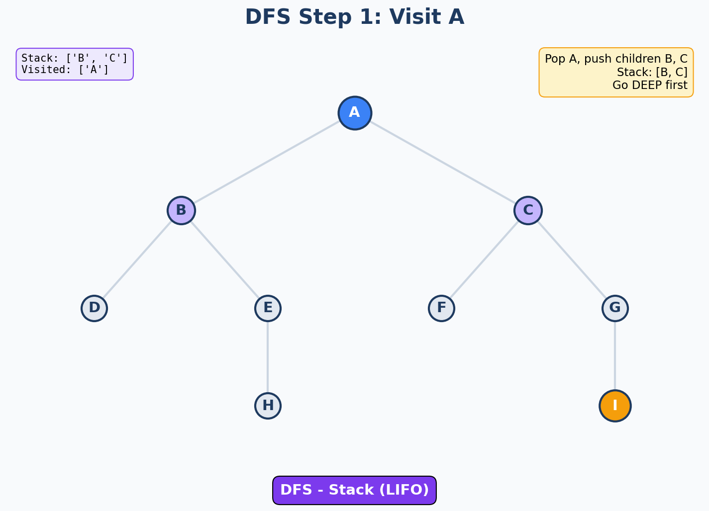
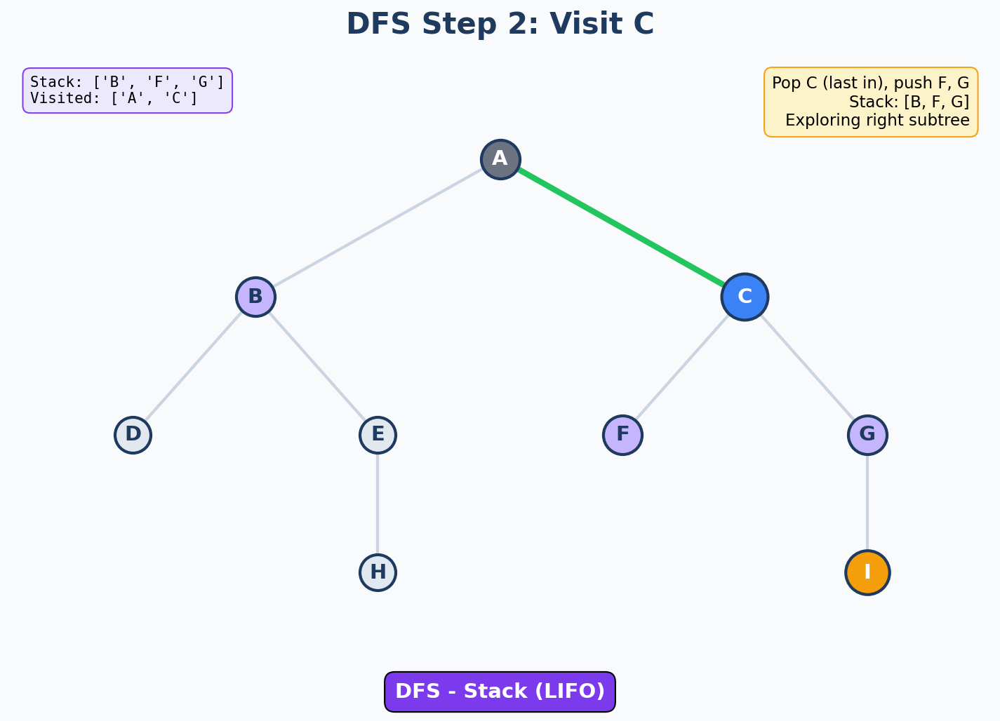
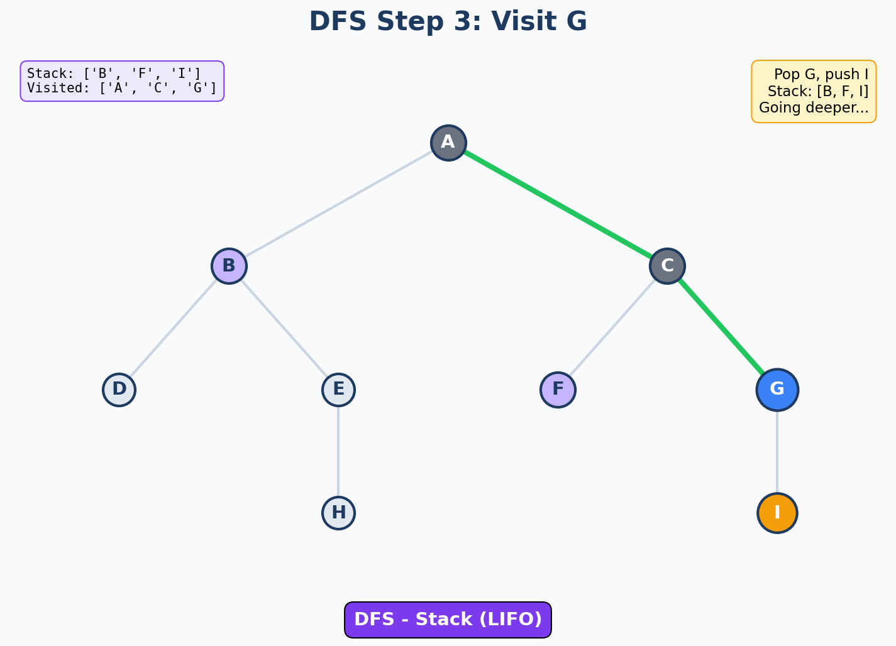
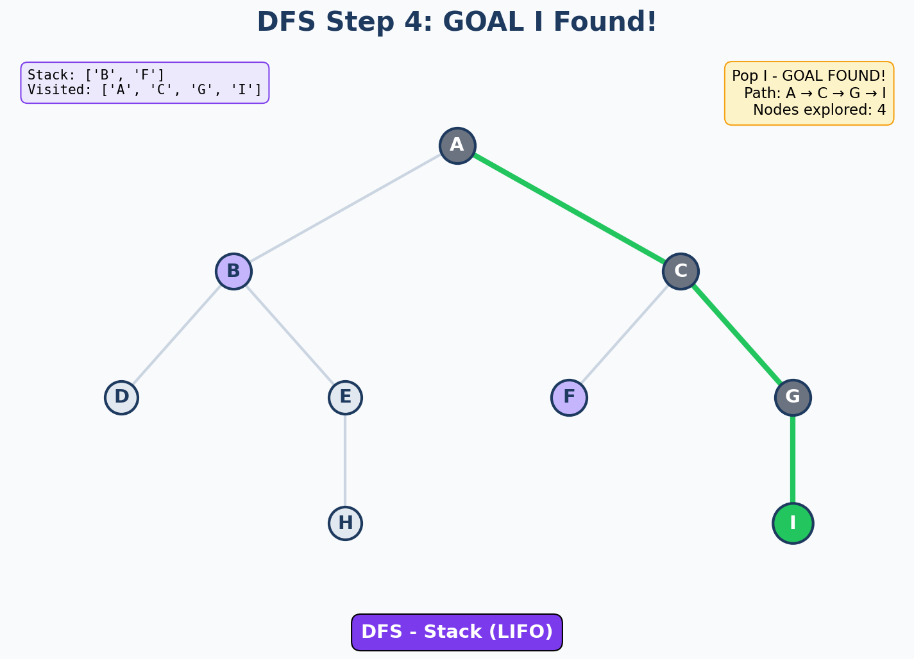
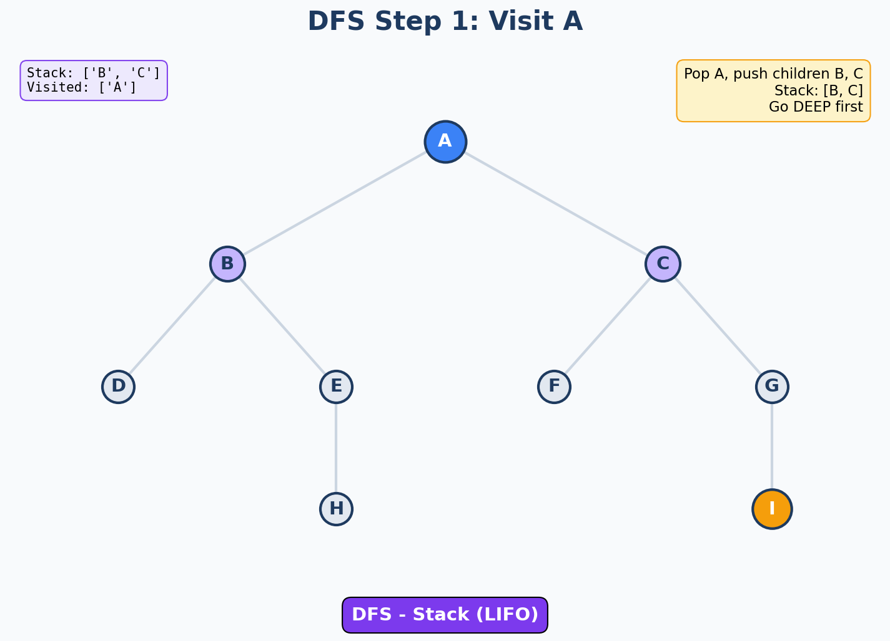
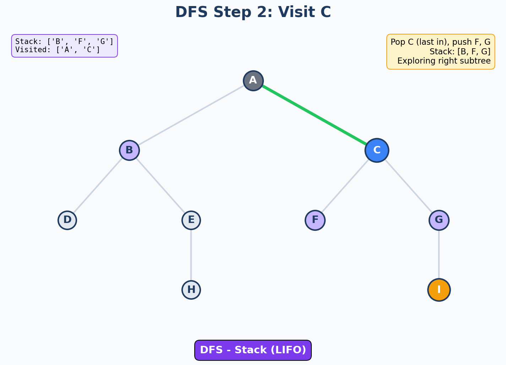
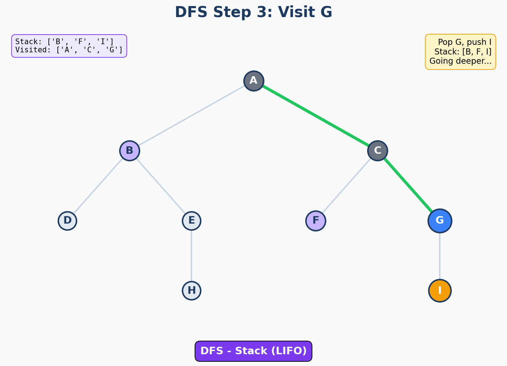
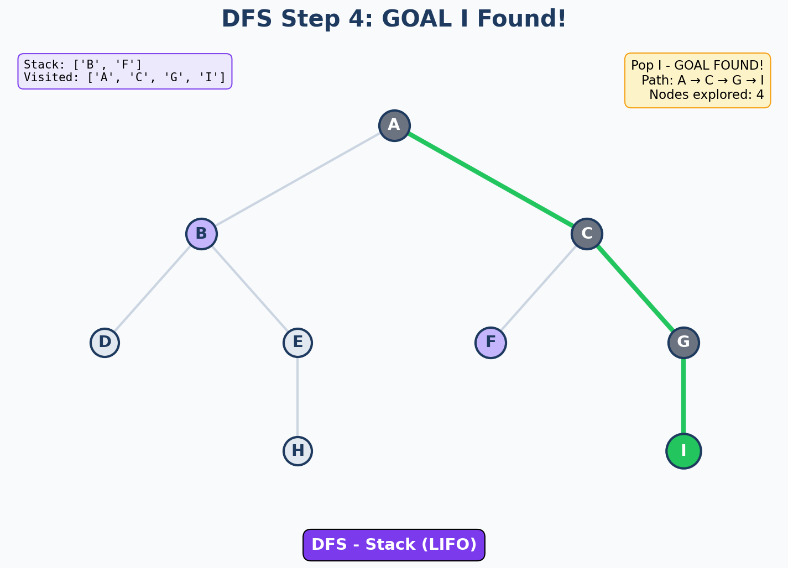

Learning Objective
CO1: Represent any well-defined problem and can apply AI Searching techniques to solve a problem.
Prerequisites & Setup
Before running the code examples in this module, ensure you have Python 3.7+ installed and the following packages:
# Install required packagespip install numpy matplotlib# For Chess AI case study (optional)pip install python-chess# For visualization animations (optional)pip install pillow
Mathematical operations, array handling
Visualization, graphs, animations
Chess move validation, board state
Image processing, GIF creation
Note: Core algorithms (DFS, BFS, A*, Mini-Max) use only Python standard library. External packages are only needed for visualizations and advanced case studies.
1. Introduction to Artificial Intelligence
Artificial Intelligence (AI) is the science and engineering of creating intelligent machines and computer programs that can simulate human-like cognitive functions such as learning, reasoning, problem-solving, perception, and language understanding.
WHAT is AI?
AI is the capability of machines to imitate intelligent human behavior. It encompasses machine learning, natural language processing, computer vision, robotics, and expert systems.
WHY is AI Important?
AI automates complex tasks, enhances decision-making, discovers patterns in massive datasets, and solves problems that are computationally infeasible for humans.
WHEN to Use AI?
Use AI when dealing with large-scale data, pattern recognition, optimization problems, autonomous systems, or when human-like reasoning is needed at scale.
HOW Does AI Work?
AI works through algorithms that learn from data (ML), search through solution spaces, represent knowledge, and make decisions using rules or learned patterns.
Brief History & Evolution of AI
1950s - The Birth of AI ($0.1B)
1950: Alan Turing publishes "Computing Machinery and Intelligence" - proposes the Turing Test
1956: Dartmouth Conference - John McCarthy coins the term "Artificial Intelligence"
1957: Frank Rosenblatt invents the Perceptron (first neural network)
Investment: Mostly government/military research grants
1960s-70s - Early Promise & First AI Winter ($0.5-1B)
1966: ELIZA chatbot created at MIT - first conversational AI
1969: Shakey the Robot - first mobile robot with AI reasoning
1974-80: First "AI Winter" - funding cuts due to unmet expectations
Investment: DARPA, university research
1980s - Expert Systems Boom ($2-5B)
1980: XCON expert system saves DEC $40M/year in computer configuration
1986: Backpropagation algorithm revives neural networks (Rumelhart, Hinton)
1987: Second AI Winter begins - expert systems prove too expensive
Companies: Symbolics, Lisp Machines Inc., IntelliCorp raised ~$1B combined
1990s - Statistical AI & Chess ($5-10B)
1997: IBM Deep Blue defeats world chess champion Garry Kasparov
1997: LSTM networks invented - foundation for modern language AI
1998: Google founded - uses AI for search ranking (PageRank)
Google's IPO (2004): $23B valuation based on AI-powered search
2000s - Machine Learning Rise ($10-30B)
2006: Geoffrey Hinton's deep learning breakthrough at U of Toronto
2007: Netflix Prize - $1M competition accelerates recommendation AI
2009: Google starts self-driving car project (now Waymo)
Facebook (2012 IPO): $104B | Using AI for news feed, ads targeting
2010s - Deep Learning Revolution ($30-100B)
2011: IBM Watson wins Jeopardy! against human champions
2012: AlexNet wins ImageNet - deep learning proves superior
2014: Google acquires DeepMind for $500M
2016: AlphaGo defeats world Go champion Lee Sedol
2017: Transformer architecture invented (basis for GPT, BERT)
NVIDIA market cap grows from $10B to $150B on AI chip demand
2020s - Generative AI Explosion ($100-200B+)
2020: GPT-3 released - 175B parameters, human-like text
2022: ChatGPT launches - fastest growing app ever (100M users in 2 months)
2023: OpenAI valued at $86B | Microsoft invests $10B
2024: NVIDIA becomes world's most valuable company ($3.3 Trillion)
Global AI market projected: $1.8 Trillion by 2030 (Bloomberg)
| Company/Sector | AI Investment | Key AI Product |
|---|---|---|
| Microsoft | $13B (OpenAI partnership) | Copilot, Azure AI |
| Google/Alphabet | $10B+ annually | Gemini, Search AI, DeepMind |
| Amazon | $8B+ annually | Alexa, AWS AI Services |
| Meta | $5B+ annually | LLaMA, AI for Feeds/Ads |
| Tesla | $3B+ annually | Full Self-Driving (FSD) |
| TOTAL (Top 50 companies) | $150B+ in 2024 | Projected $300B by 2027 |
Types of AI Systems
| Type | Description | Capability | Example |
|---|---|---|---|
| Reactive Machines | No memory, responds to current input only | Task-specific responses | IBM Deep Blue (Chess) |
| Limited Memory | Uses past data to make decisions | Learning from historical data | Self-driving cars, ChatGPT |
| Theory of Mind | Understands emotions, beliefs (In Research) | Social intelligence | Advanced social robots |
| Self-Aware AI | Has consciousness (Hypothetical) | Human-like awareness | Sci-Fi concept (not yet achieved) |
Imagine teaching a child to play chess:
- Rules-based AI: You give them a rulebook - "If opponent does X, you do Y"
- Learning AI: They play 1000 games and figure out patterns themselves
- Search-based AI: They think ahead - "If I move here, they'll move there, then I can..."
This unit focuses on Search-based AI - teaching computers to explore possibilities and find solutions!
Taxonomy of AI Search Techniques
Stack (LIFO)
Queue (FIFO)
Priority Queue
Depth Limited
Uses h(n) only
f(n)=g(n)+h(n)
Iterative Deepening
Greedy Local
With randomness
Population-based
MAX vs MIN
Pruning optimization
Monte Carlo Tree
| Algorithm | Category | Data Structure | Complete? | Optimal? | Best Use Case |
|---|---|---|---|---|---|
| DFS | Uninformed | Stack | No* | No | Deep solutions, memory-limited |
| BFS | Uninformed | Queue | Yes | Yes** | Shortest path (unit cost) |
| Greedy Best-First | Informed | Priority Queue | No | No | Fast but suboptimal |
| A* | Informed | Priority Queue | Yes | Yes | Optimal pathfinding |
| Hill Climbing | Local | Current state only | No | No | Optimization, low memory |
| Mini-Max | Adversarial | Game Tree | Yes | Yes | Perfect information games |
| Alpha-Beta | Adversarial | Game Tree + Pruning | Yes | Yes | Same as Mini-Max, faster |
*Complete for finite graphs with cycle detection | **Optimal for uniform edge costs
Scenario: Create a rule-based AI that recommends activities based on weather.
Real-World Application: Amazon, Netflix, Spotify use AI to recommend products/content. Here's a simplified version.
Problem: Search billions of web pages and return relevant results in milliseconds.
AI Techniques Used:
- PageRank Algorithm: Graph-based search to rank page importance
- Natural Language Processing: Understanding search intent
- Machine Learning: RankBrain learns from user behavior
- Knowledge Graphs: Structured representation of world knowledge
Result: 8.5 billion searches per day with sub-second response times!
How PageRank Works - Step by Step
┌─────────────────────────────────────────────────────────────────────────────┐ │ GOOGLE SEARCH ARCHITECTURE │ ├─────────────────────────────────────────────────────────────────────────────┤ │ │ │ USER QUERY: "best pizza near me" │ │ │ │ │ ▼ │ │ ┌─────────────────┐ ┌─────────────────┐ ┌─────────────────┐ │ │ │ Query Parser │───▶│ Index Lookup │───▶│ PageRank Sort │ │ │ │ (NLP/Intent) │ │ (Inverted Idx) │ │ (Graph Walk) │ │ │ └─────────────────┘ └─────────────────┘ └─────────────────┘ │ │ │ │ │ │ │ ▼ ▼ ▼ │ │ "pizza" + "near" Find all pages Rank by: │ │ + location context containing terms - Inbound links │ │ - Link quality │ │ - User signals │ │ │ │ ┌─────────────────────────────────────────────────────────────────────┐ │ │ │ WEB AS A GRAPH │ │ │ │ │ │ │ │ [Pizza Blog]──────▶[Best Pizza NYC]◀──────[Food Review] │ │ │ │ │ ▲ │ │ │ │ │ │ │ │ │ │ │ │ └──────▶[Local Restaurant]◀───────────────┘ │ │ │ │ │ │ │ │ │ ▼ │ │ │ │ More inbound links = Higher PageRank │ │ │ └─────────────────────────────────────────────────────────────────────┘ │ │ │ │ RESULT: Ordered list of most relevant, authoritative pages │ └─────────────────────────────────────────────────────────────────────────────┘
Simplified PageRank Implementation
Step-by-Step Walkthrough
Crawl web pages and record which page links to which. This creates a directed graph with billions of nodes.
Give every page equal initial importance (1/N). We don't know who's important yet!
Each page shares its rank with pages it links to. More outgoing links = less rank per link.
Repeat until ranks stabilize. Pages with many incoming links from important pages rise to top!
Practice Exercise: PageRank
Exercise 1: Given the following web graph, calculate PageRank after 2 iterations (damping = 0.85):
A ───▶ B ───▶ C
│ │
└─────────────┘
Links: A→B, A→C, B→C, C→A
Show Solution
Initial: rank_A = rank_B = rank_C = 1/3 ≈ 0.333
Iteration 1:
- A receives from C: 0.85 × (0.333/1) + 0.15/3 = 0.333
- B receives from A: 0.85 × (0.333/2) + 0.15/3 = 0.192
- C receives from A,B: 0.85 × (0.333/2 + 0.333/1) + 0.15/3 = 0.475
Insight: C has highest rank because it receives links from both A and B!
Exercise 2: Modify the Python code above to handle "dangling nodes" (pages with no outgoing links). What happens if we don't handle them?
Show Hint
Hint: Dangling nodes "absorb" rank without redistributing it. Solution: Make them link to all pages (uniform distribution) or redistribute their rank equally.
# Handle dangling nodes
if not links: # No outgoing links
M[:, page_idx[page]] = 1.0 / n # Distribute to all
CO1 Sample Questions - Introduction to AI
(1) Acting humanly - Turing Test approach
(2) Thinking humanly - Cognitive modeling
(3) Thinking rationally - Laws of thought/Logic
(4) Acting rationally - Rational agent approach (most common in modern AI)
Weak AI (Narrow AI): Designed for specific tasks. Examples: Siri, Chess engines, spam filters.
Strong AI (General AI): Hypothetical AI with human-level intelligence across all domains. Can transfer learning across tasks. Currently doesn't exist.
2. Well-Defined Problem Representation & State Space
Well-Defined Problem: A problem that can be formally described with a clear initial state, goal state, set of possible actions, and a way to determine when the goal is reached.
Imagine you wake up at 7:00 AM and need to reach office by 9:00 AM. This everyday situation is actually a search problem that your brain solves automatically!
Breaking Down Your Morning as a Search Problem:
| Initial State: | You are in bed, not dressed, haven't eaten, at home |
| Goal State: | You are at office, dressed properly, have had breakfast |
| Actions: | Wake up, Brush teeth, Shower, Get dressed, Eat breakfast, Take bus/drive, Walk to office |
| Constraints: | Can't eat before waking up, can't drive before getting dressed, must reach before 9 AM |
| Path Cost: | Total time taken for all activities |
The Search: Your brain quickly evaluates different "paths" - Should you shower first or eat first? Take bus or drive? Each choice leads to a different sequence of states, and you pick the one that gets you to the goal (office by 9 AM) most efficiently!
Think of Problem Representation Like a Video Game:
Cooking a Meal
Initial State: Raw ingredients in kitchen
Goal State: Cooked dish on table
Actions: Chop vegetables, boil water, add spices, stir, serve
Constraints: Must boil water before adding pasta, must chop before frying
Search Problem: What order should I do things to cook fastest?
Shopping at a Mall
Initial State: At mall entrance with shopping list
Goal State: All items purchased, at exit
Actions: Go to Store A, Buy item X, Move to Store B, etc.
Path Cost: Total walking distance + time in queues
Search Problem: What route through mall minimizes walking?
Completing Your Degree
Initial State: Freshman with 0 credits
Goal State: All required credits + degree requirements met
Actions: Take Course A, Take Course B, Do Internship, Write Thesis
Constraints: Prerequisites (must take Calculus 1 before Calculus 2)
Search Problem: What course sequence gets me to graduation efficiently?
- Wrong representation = Unsolvable problem. If you define the 8-puzzle with only 3 moves instead of 4, the computer will never find a solution even if one exists!
- Good representation = Fast solution. Representing a chess game with the right state structure can reduce search time from years to seconds.
- Real companies spend millions on this. Google Maps' success comes from how they represent road networks. Uber's efficiency comes from how they represent driver-rider matching.
- It's the foundation of AI. Before any fancy algorithm runs, the problem must be properly defined. Garbage in = Garbage out!
WHAT is Problem Representation?
Converting a real-world problem into a formal structure with states, actions, transitions, and goals that an AI system can process and solve.
WHY is it Important?
Proper representation determines if a problem is solvable, which algorithms apply, and how efficient the solution will be. Bad representation = unsolvable!
WHEN to Use State Space?
When problems can be decomposed into discrete states and transitions - puzzles, path finding, planning, games, scheduling.
HOW to Define a Problem?
Define: (1) Initial state, (2) Actions/Operators, (3) Transition model, (4) Goal test, (5) Path cost function.
Components of a Well-Defined Problem
| Component | Description | 8-Puzzle Example | Route Finding Example |
|---|---|---|---|
| Initial State | Starting configuration | Scrambled puzzle configuration | Starting city (e.g., Arad) |
| Actions | Possible moves/operations | {Move blank: UP, DOWN, LEFT, RIGHT} | {Go to adjacent city} |
| Transition Model | Result of applying action | RESULT(state, action) = new puzzle state | RESULT(Arad, Go-Sibiu) = Sibiu |
| Goal Test | Check if goal reached | Is puzzle in sorted order? | Is current city = Bucharest? |
| Path Cost | Cost of solution path | Number of moves | Total distance traveled |
State Space Representation
State Space: The set of all possible states reachable from the initial state by any sequence of actions. It can be represented as a graph where nodes are states and edges are actions/transitions.
State Space Graph Visualization
Green = Start State, Yellow = Goal State, Blue = Intermediate States
Problem: Define the 8-puzzle as a well-defined search problem.
Application: Google Maps, Uber, logistics companies use this formulation.
Watch the A* algorithm find the optimal path step-by-step on the Romania Map
Step-by-Step Breakdown (Click to Enlarge)
Step 0: Initialize
Step 1: Expand Arad
Step 2: Expand Sibiu
Step 3: Expand Rimnicu
Step 4: Expand Fagaras
Step 5: Expand Pitesti
Step 6: GOAL REACHED! Optimal Path = 418 km
Application: University timetabling, airline crew scheduling, factory production.
Watch the backtracking algorithm solve the scheduling problem step-by-step
Backtracking Steps (Click to Enlarge)
Step 0: Setup
Step 1: Assign AI
Conflict! Room taken
Conflict! Prof busy
Database Assigned
Networks Assigned
Conflict! Room
Conflict! Prof busy
OS Assigned
SOLUTION FOUND!
Key Insight: Backtracking explores assignments, detects conflicts early, and backtracks to try alternatives. This CSP took 10 steps with 4 conflicts before finding a valid schedule!
CO1 Sample Questions - Problem Representation
1. Initial State: s0 where agent starts
2. Actions(s): Set of actions applicable in state s
3. Transition Model: RESULT(s, a) → s'
4. Goal Test: Determines if state is a goal
5. Path Cost: g(n) = sum of step costs
State: (x, y) where x = water in 4-gal jug, y = water in 3-gal jug
Initial: (0, 0)
Goal: x = 2 (any y)
Actions: Fill 4-gal, Fill 3-gal, Empty 4-gal, Empty 3-gal, Pour 4→3, Pour 3→4
Transitions: (0,0)→Fill4→(4,0), (4,0)→Pour4→3→(1,3), etc.
3. Blind (Uninformed) Search Techniques
Blind Search (Uninformed Search): Search strategies that have no additional information about states beyond the problem definition. They can only generate successors and distinguish goal state from non-goal states.
WHAT is Blind Search?
Search algorithms that explore the state space systematically without using domain-specific knowledge (heuristics). They only use information in problem definition.
WHY Use Blind Search?
Guarantees completeness (finds solution if exists). Simple to implement. Useful when no heuristic is available or as a baseline.
WHEN to Use?
Small state spaces, when optimal solution needed (BFS for unit costs), when no good heuristic exists, or for analyzing algorithm properties.
HOW It Works?
Systematically explore nodes using a frontier (queue/stack). Expand nodes, add children to frontier, repeat until goal found.
Depth-First Search (DFS)
Depth-First Search: Explores as far as possible along each branch before backtracking. Uses a LIFO stack (or recursion) for the frontier.
Imagine you're exploring a haunted house looking for a hidden treasure. DFS is like how a curious explorer would naturally search:
The DFS Explorer's Strategy:
Step 1: You enter the front door and see two corridors - LEFT and RIGHT.
Step 2: You pick LEFT and walk all the way down until you hit a dead end or find rooms.
Step 3: In each room, you go as DEEP as possible - if there's a closet, open it. If there's a basement door, go down!
Step 4: Only when you've explored everything down that path, you BACKTRACK to the last junction and try the other direction.
Step 5: Eventually you'll check every corner of the house!
Key Insight: You're using a mental "stack" - remembering where you came from so you can backtrack. Just like the computer uses a stack data structure! The LAST place you noted is the FIRST place you backtrack to (LIFO - Last In, First Out).
DFS in Plain English:
"Go as deep as you can, then come back and try another path."
Think of it like reading a "Choose Your Own Adventure" book:
- You start at page 1
- The book says "To fight the dragon, go to page 45. To run away, go to page 23."
- You choose page 45 (going DEEP into that story branch)
- Page 45 leads to page 78, which leads to page 92...
- Eventually you reach "THE END" (dead end or goal)
- Now you go BACK and try page 23 to see that story
Why Use a Stack?
A stack is like a pile of plates:
- You can only add plates on TOP (push)
- You can only remove the TOP plate (pop)
- The LAST plate you added is the FIRST one you remove
This perfectly matches how DFS explores - the LAST path you discovered is the FIRST one you explore next!
Finding a File on Your Computer
When you manually search for a file, you often use DFS:
Documents → Work → 2024 → January → (not here) → back to 2024 → February → (found it!)
You went DEEP into January folder first, then backtracked to try February.
Solving a Maze
When you trace a maze with your finger:
You follow one path until you hit a wall, then go back to the last fork and try another direction.
This is exactly DFS! The "wall rule" (always keep your hand on left/right wall) is a DFS variant.
Debugging Code
When you debug: main() → function1() → helper() → (bug not here) → back to function1() → function2() → (found bug!)
You trace deep into one call stack, then backtrack to try other branches.
Question to ask yourself: "Have I fully explored this path before moving to the next one?"
DFS Mindset: "I'll commit fully to this direction. Only when I hit a dead end will I consider alternatives."
Good for: When you have deep solutions, limited memory, or when ANY solution is acceptable (not necessarily the shortest).
- Initialize: Push start node onto stack
- If stack is empty, return FAILURE (no solution)
- Pop node from stack (current node)
- If current is GOAL, return SUCCESS with path
- Mark current as VISITED
- Push all unvisited children onto stack
- Go to step 2
*Complete for finite spaces with cycle detection. b = branching factor, m = maximum depth
Time Complexity: O(bm) - Why?
b = branching factor (average number of children per node)
m = maximum depth of the tree
Simple Explanation:
- Level 0: 1 node (root)
- Level 1: b nodes (each child of root)
- Level 2: b × b = b² nodes
- Level 3: b × b × b = b³ nodes
- Level m: bm nodes
Example: If b=2, m=10 → 210 = 1,024 nodes in worst case
Space Complexity: O(b × m) - Why?
Key Insight: DFS only stores ONE path from root to current node!
- At most m nodes deep (one path)
- At each level, we store up to b siblings
- Total: b + b + ... + b (m times) = b × m
This is why DFS is memory-efficient! Unlike BFS which stores entire levels (bd nodes), DFS only stores one path at a time.
Edge Cases & Robust Implementation
Production-quality search algorithms must handle these edge cases:
In graphs (not trees), nodes can be revisited. Always track visited nodes to prevent infinite loops.
if neighbor in visited:
continue # Skip already-visited
Goal may be unreachable from start. Always check for empty frontier.
if not frontier:
return None # No path exists
Trivial case often overlooked. Check before searching.
if start == goal:
return [start] # Path of length 0
Infinite/very deep trees can exhaust memory. Add depth limit for DFS.
if depth > MAX_DEPTH:
return None # Limit reached
if not graph or start not in graph: raise ValueError("Invalid graph")
DFS Algorithm Visualization
Click play to watch DFS traversal step-by-step
Step-by-Step Frames
 







DFS uses Stack (LIFO) - explores deep first, then backtracks
Breadth-First Search (BFS)
Breadth-First Search: Explores all nodes at the current depth before moving to nodes at the next depth level. Uses a FIFO queue for the frontier.
Imagine you throw a stone into a calm pond. Watch how the ripples spread:
How BFS is Like Water Ripples:
The stone hits water: This is your starting point (initial state).
First ripple: Water moves outward equally in ALL directions - 1 meter from center.
Second ripple: Before going further in any direction, the water spreads to ALL points 2 meters away.
Third ripple: Only after covering the 2-meter ring does it reach 3 meters.
Pattern: Level 1 completes → Level 2 completes → Level 3 completes...
Key Insight: The ripple reaches ALL nearby points before ANY far point. That's why BFS always finds the shortest path - it explores every 1-step solution before any 2-step solution, every 2-step before any 3-step, etc.
BFS in Plain English:
"Check ALL your immediate options before going further out."
Think of it like finding a friend in a crowded mall:
- Level 0: Look around where you're standing right now
- Level 1: Walk to ALL adjacent stores and peek inside each one
- Level 2: Only after checking ALL adjacent stores, move to the NEXT ring of stores
- Level 3: Continue spreading outward layer by layer
- When found: You've taken the MINIMUM number of steps to reach them!
Why Use a Queue?
A queue is like a line at a ticket counter:
- New people join at the BACK of the line
- People leave from the FRONT of the line
- The FIRST person who arrived is the FIRST to be served (FIFO)
This ensures we process nodes in the order we discovered them - all level-1 nodes before level-2, all level-2 before level-3!
How Rumors Spread
You tell a secret to 3 close friends (Level 1).
Each friend tells 3 of THEIR friends (Level 2 - 9 people).
Those tell 3 more each (Level 3 - 27 people).
The rumor spreads level-by-level, reaching nearby social circles before distant ones!
How Diseases Spread
Patient Zero infects close contacts first (Level 1).
Those contacts infect THEIR close contacts (Level 2).
Epidemiologists use BFS-like models to trace and contain outbreaks!
This is why "contact tracing" works - it follows the BFS pattern of infection.
LinkedIn's "Degrees of Connection"
1st connections: People you directly know (Level 1)
2nd connections: Friends of friends (Level 2)
3rd connections: Friends of friends of friends (Level 3)
LinkedIn uses BFS to show you the SHORTEST social path to anyone!
| Use DFS When... | Use BFS When... |
|---|---|
| Memory is limited (DFS uses less) | You need the SHORTEST path |
| Solution is deep in the tree | Solution is likely near the start |
| ANY solution is acceptable | The OPTIMAL solution matters |
| Exploring game trees, mazes | Finding shortest route, social networks |
- Initialize: Enqueue start node into queue
- If queue is empty, return FAILURE
- Dequeue node from front (current node)
- If current is GOAL, return SUCCESS with path
- Mark current as VISITED
- Enqueue all unvisited children at the rear
- Go to step 2
*Optimal for unit step costs. b = branching factor, d = depth of shallowest goal
Time Complexity: O(bd) - Why?
b = branching factor, d = depth of shallowest goal
Simple Explanation:
- Level 0: 1 node
- Level 1: b nodes
- Level 2: b² nodes
- Level d: bd nodes
- Total: 1 + b + b² + ... + bd ≈ O(bd)
Key: BFS only goes to depth d (where goal is), not deeper!
Space Complexity: O(bd) - Why?
Problem: BFS must store ALL nodes at the current level!
- At level d, there can be bd nodes in the queue
- This is the ENTIRE "frontier" of exploration
- Unlike DFS which only stores ONE path
Warning: BFS can run out of memory on deep/wide graphs!
Example: If b=10, d=6 → 106 = 1,000,000 nodes in queue!
Why BFS Finds Shortest Path
Proof by level:
- BFS explores ALL level 1 nodes before ANY level 2 node
- If goal is at level 3, BFS checks levels 1, 2 first
- If goal was at level 2, BFS would have found it earlier!
- Therefore: First path found = shortest path (by edges)
BFS Algorithm Visualization
Click play to watch BFS traversal step-by-step
Step-by-Step Frames
BFS uses Queue (FIFO) - explores level by level, guarantees shortest path
DFS vs BFS Comparison
| Property | DFS (Depth-First) | BFS (Breadth-First) |
|---|---|---|
| Data Structure | Stack (LIFO) | Queue (FIFO) |
| Exploration Pattern | Deep first, then backtrack | Level by level (shallow first) |
| Memory Usage | O(b×m) - Linear with depth | O(bd) - Exponential |
| Finds Shortest Path? | No | Yes (for unit costs) |
| Best For | Deep solutions, memory constraints | Shallow solutions, shortest path |
| Industry Use | Maze solving, topological sort, cycle detection | Shortest path, social network friends, web crawlers |
Company: LinkedIn, Facebook
Problem: Find people within 2-3 degrees of connection
Solution: BFS from user node, explore connections level by level
How LinkedIn "People You May Know" Works
┌─────────────────────────────────────────────────────────────────────────────┐ │ BFS FOR FRIEND RECOMMENDATIONS │ ├─────────────────────────────────────────────────────────────────────────────┤ │ │ │ Starting from YOU (Alice), BFS explores level by level: │ │ │ │ ┌───────┐ │ │ │ ALICE │ ◄── Level 0 (You) │ │ │ (YOU) │ │ │ └───┬───┘ │ │ ┌────────────┼────────────┐ │ │ ▼ ▼ ▼ │ │ ┌───────┐ ┌───────┐ ┌───────┐ │ │ Level 1 ───▶ │ Bob │ │Charlie│ │ Diana │ ◄── Your direct friends │ │ (Friends) └───┬───┘ └───┬───┘ └───┬───┘ │ │ │ │ │ │ │ ┌─────────┼───────────┼───────────┼─────────┐ │ │ ▼ ▼ ▼ ▼ ▼ │ │ ┌───────┐ ┌───────┐ ┌───────┐ ┌───────┐ ┌───────┐ │ │ │ Eve │ │ Frank │ │ Grace │ │ Henry │ │ Ivy │ │ │ └───────┘ └───────┘ └───────┘ └───────┘ └───────┘ │ │ Level 2 ◄── Friends of friends - RECOMMEND THESE! │ │ │ │ ═══════════════════════════════════════════════════════════════════════ │ │ WHY BFS? │ │ • Explores ALL Level 1 before Level 2 (closest connections first) │ │ • Uses Queue (FIFO) to maintain level order │ │ • Stops at max_degree to limit search │ │ ═══════════════════════════════════════════════════════════════════════ │ │ │ │ BFS QUEUE TRACE: │ │ ┌────────────────────────────────────────────────────────────────────┐ │ │ │ Step 1: Queue = [Alice] │ │ │ │ Step 2: Pop Alice → Add Bob, Charlie, Diana │ │ │ │ Queue = [Bob, Charlie, Diana] │ │ │ │ Step 3: Pop Bob → Add Eve, Frank (Bob's friends) │ │ │ │ Queue = [Charlie, Diana, Eve, Frank] │ │ │ │ Step 4: Pop Charlie → Add Grace │ │ │ │ Queue = [Diana, Eve, Frank, Grace] │ │ │ │ ... continues level by level ... │ │ │ └────────────────────────────────────────────────────────────────────┘ │ │ │ │ OUTPUT: Recommend [Eve, Frank, Grace, Henry, Ivy] as "People You May Know"│ └─────────────────────────────────────────────────────────────────────────────┘
Step-by-Step Algorithm
Put yourself (the user) in the queue with degree=0
Remove first person, add their friends (if not visited)
Record connection degree (1st, 2nd, 3rd degree)
2nd degree = "People You May Know"!
Practice Exercise: Social Network BFS
Exercise 1: Given the following social network, trace BFS to find all connections within 2 degrees from "Alice":
Alice ─── Bob ─── David
│ │
Carol ─── Eve ─── Frank
│
Grace
Show BFS Trace
| Level | Queue State | Current Person | Discovered |
|---|---|---|---|
| 0 | [Alice] | Alice | Bob, Carol |
| 1 | [Bob, Carol] | Bob | David, Eve |
| 1 | [Carol, David, Eve] | Carol | Grace (Eve already seen) |
Result: 1° = {Bob, Carol}, 2° = {David, Eve, Grace}
Exercise 2: Extend the SocialNetworkBFS class to count "mutual friends" between any two users. How would you use BFS for this?
Show Solution Approach
def mutual_friends(self, user1, user2):
"""Find mutual friends between two users"""
# Get direct friends of both users
friends1 = set(self.network.get(user1, []))
friends2 = set(self.network.get(user2, []))
# Intersection = mutual friends
mutual = friends1 & friends2
return list(mutual)
# Usage: network.mutual_friends('Alice', 'David')
# Returns friends who know both Alice AND David
Key Insight: Mutual friends are found by computing the intersection of two users' friend lists. BFS to level 1 gets direct friends, then set intersection finds common ones.
Exercise 3 (Challenge): What is the time complexity of finding the shortest path between any two users in a social network with N users and E friend connections?
Show Answer
Answer: O(N + E) using BFS
- N: Each user is visited at most once
- E: Each friendship edge is explored at most twice (once from each end)
Facebook has ~3B users and ~200B friend connections. Finding shortest path: O(203B) operations worst case, but BFS usually terminates much earlier due to "six degrees of separation"!
CO1 Comprehensive Questions - Blind Search (DFS & BFS)
3-Mark Questions (Short Answer)
Model Answer:
Definition (1 mark): Depth-First Search is an uninformed search algorithm that explores as far as possible along each branch before backtracking. It uses a Stack (LIFO) data structure.
Complexity (1 mark):
- Time: O(bm) where b=branching factor, m=maximum depth
- Space: O(b×m) - only stores current path
Not Optimal (1 mark): DFS may find a deeper solution first instead of a shallower one. It explores one branch completely before trying others, so it might miss a shorter path that exists in an unexplored branch.
Model Answer:
Level-by-Level Exploration (1 mark): BFS explores all nodes at depth d before any node at depth d+1.
First Discovery Property (1 mark): When BFS first reaches the goal, it has taken the minimum number of edges because:
- All paths of length k are explored before paths of length k+1
- Goal at level d means no path shorter than d exists
Queue Ordering (1 mark): FIFO queue ensures nodes are processed in order of their distance from start. Closer nodes are always processed before farther nodes.
Model Answer:
DFS Memory (1 mark): O(b×m) - stores only one path from root to current node plus siblings at each level. Example: b=2, m=10 → 20 nodes max.
BFS Memory (1 mark): O(bd) - stores entire frontier (all nodes at current level). Example: b=2, d=10 → 1024 nodes at level 10!
DFS is more efficient (1 mark): Linear O(b×m) vs exponential O(bd). For deep trees with large branching factor, BFS can run out of memory while DFS stays manageable.
Model Answer:
Stack - LIFO (1 mark): Last In First Out. New elements added to top, removed from top. Like a pile of plates.
Queue - FIFO (1 mark): First In First Out. New elements added to back, removed from front. Like a ticket line.
Effect on Search (1 mark):
- DFS (Stack): Most recently discovered node is explored next → goes deep
- BFS (Queue): Oldest discovered node is explored next → explores level by level
8-Mark Questions (Long Answer)
Graph: S ──── A ──── B
│ │ │
│ │ │
C ──── D ──── G
Edges: S-A, S-C, A-B, A-D, C-D, B-G, D-G
Start: S, Goal: G
DFS Solution (4 marks):
| Step | Current | Stack (top→bottom) | Visited | Action |
|---|---|---|---|---|
| 1 | - | [S] | {} | Initialize with start |
| 2 | S | [C, A] | {S} | Pop S, push neighbors A, C |
| 3 | A | [C, D, B] | {S,A} | Pop A, push B, D |
| 4 | B | [C, D, G] | {S,A,B} | Pop B, push G |
| 5 | G | [C, D] | {S,A,B,G} | GOAL FOUND! |
DFS Path: S → A → B → G (length 3)
Nodes Explored: 4
BFS Solution (4 marks):
| Step | Current | Queue (front→back) | Visited | Action |
|---|---|---|---|---|
| 1 | - | [S] | {S} | Initialize |
| 2 | S | [A, C] | {S,A,C} | Dequeue S, enqueue A, C |
| 3 | A | [C, B, D] | {S,A,C,B,D} | Dequeue A, enqueue B, D |
| 4 | C | [B, D] | {S,A,C,B,D} | Dequeue C, D already visited |
| 5 | B | [D, G] | {S,A,C,B,D,G} | Dequeue B, enqueue G |
| 6 | D | [G] | {S,A,C,B,D,G} | Dequeue D, G already queued |
| 7 | G | [] | {S,A,C,B,D,G} | GOAL FOUND! |
BFS Path: S → A → B → G (length 3) - same as DFS here!
Nodes Explored: 6
Note: BFS explored more nodes but guarantees this is the shortest path.
(a) Represent this as a state space search problem (2 marks)
(b) Apply BFS to find the shortest path (3 marks)
(c) Apply DFS and compare the result (3 marks)
(a) Problem Formulation (2 marks):
- State: Current room the robot is in (A, B, C, D, E, or F)
- Initial State: Room A
- Goal State: Room F
- Actions: Move to adjacent room
- Transition: RESULT(A, move) = B or C; RESULT(B, move) = D or E
- Path Cost: Number of room transitions
(b) BFS Solution (3 marks):
Level 0: [A]
Level 1: [B, C] (from A)
Level 2: [D, E] (from B, C - E shared)
Level 3: [F] (from D or E)
Shortest Path: A → B → D → F (3 moves)
Alternative: A → B → E → F or A → C → E → F (also 3 moves)
BFS guarantees this is optimal - no 2-move path exists.
(c) DFS Solution (3 marks):
Stack: [A]
Pop A, push B, C → Stack: [C, B]
Pop B, push D, E → Stack: [C, E, D]
Pop D, push F → Stack: [C, E, F]
Pop F → GOAL FOUND!
DFS Path: A → B → D → F (3 moves)
Comparison:
- Both found same length path (lucky - not guaranteed!)
- DFS explored 4 nodes, BFS would explore more
- If goal was E: DFS might find A→B→E while BFS would find both A→B→E and A→C→E
DFS Complexity Analysis (4 marks):
Time: O(bm)
- b = branching factor (children per node)
- m = maximum depth of tree
- Example: b=3, m=5 → 35 = 243 nodes worst case
Space: O(b×m)
- Stores one path + siblings at each level
- Example: b=3, m=5 → 15 nodes maximum in stack
Failure Cases:
- Infinite loops in graphs without cycle detection
- Infinite depth trees (never terminates)
- When optimal solution needed (DFS may find suboptimal)
BFS Complexity Analysis (4 marks):
Time: O(bd)
- d = depth of shallowest goal
- Example: b=3, d=5 → 35 = 243 nodes
- Better than DFS if d << m
Space: O(bd)
- Must store entire frontier level
- Example: b=10, d=6 → 106 = 1,000,000 nodes!
Failure Cases:
- Memory exhaustion on large branching factors
- Deep solutions waste time exploring shallow levels
- Not suitable for weighted graphs (use Dijkstra/A* instead)
Complete Solution with Explanation:
# (2 marks) Function definition and initialization from collections import deque def bfs_all_shortest_paths(graph, start, goal): """Find ALL shortest paths from start to goal""" # Queue stores (current_node, path_so_far) queue = deque([(start, [start])]) visited_at_level = {start: 0} # Track level at which node was first visited shortest_paths = [] shortest_length = float('inf') # (2 marks) Main BFS loop while queue: node, path = queue.popleft() current_level = len(path) - 1 # Stop if we've passed the shortest path length if len(path) > shortest_length: break # (2 marks) Goal handling - collect all shortest paths if node == goal: if len(path) < shortest_length: shortest_length = len(path) shortest_paths = [path] # New shorter path found elif len(path) == shortest_length: shortest_paths.append(path) # Another path of same length continue # (2 marks) Explore neighbors for neighbor in graph.get(node, []): next_level = current_level + 1 # Allow revisit if at same level (different path) if neighbor not in visited_at_level or visited_at_level[neighbor] >= next_level: visited_at_level[neighbor] = next_level queue.append((neighbor, path + [neighbor])) return shortest_paths # Example usage graph = {'A': ['B', 'C'], 'B': ['D'], 'C': ['D'], 'D': ['E']} paths = bfs_all_shortest_paths(graph, 'A', 'D') print(f"All shortest paths: {paths}") # Output: All shortest paths: [['A', 'B', 'D'], ['A', 'C', 'D']]
4. Informed Search Techniques
Informed Search (Heuristic Search): Search strategies that use problem-specific knowledge beyond the problem definition to guide the search toward the goal more efficiently.
WHAT is Heuristic?
A heuristic h(n) is a function that estimates the cost from node n to the goal. It provides "informed guesses" to guide search.
WHY Use Heuristics?
Dramatically reduces search space exploration. What takes BFS millions of nodes might take A* only hundreds with a good heuristic.
WHEN to Use?
Large state spaces where blind search is impractical. When domain knowledge can estimate distance to goal.
HOW to Choose h(n)?
h(n) should be: (1) Admissible: never overestimate, (2) Consistent: h(n) ≤ c(n,n') + h(n'), (3) Computationally cheap.
Heuristic Functions
Properties of Good Heuristics
- Admissible: h(n) ≤ h*(n) where h*(n) is true cost. Never overestimates!
- Consistent (Monotonic): h(n) ≤ c(n,a,n') + h(n') for all successors n'
- Informative: Higher h values (while admissible) explore fewer nodes
| Problem | Heuristic h(n) | Admissible? | Explanation |
|---|---|---|---|
| 8-Puzzle | Misplaced tiles count | Yes | Each misplaced tile needs at least 1 move |
| 8-Puzzle | Manhattan distance | Yes | Sum of distances each tile must move |
| Route Finding | Straight-line distance | Yes | Can't travel shorter than straight line |
| N-Queens | Conflicts remaining | No | One move may fix multiple conflicts |
Hill Climbing Search
Hill Climbing: A local search algorithm that continuously moves toward increasing value (ascending the "hill" of the objective function). It keeps only the current state in memory.
Imagine you're a hiker trying to reach the highest point of a mountain range, but there's thick fog everywhere - you can only see a few meters around you!
The Hill Climbing Hiker's Strategy:
What you know: Only the slope immediately around your feet
What you DON'T know: What's beyond the fog, where the true peak is
Your strategy:
- Look around your current position
- Find which direction goes UP
- Take a step in that direction
- Repeat until no direction goes up
The problem: When you reach a point where ALL directions go down, you stop. But is this THE highest peak, or just A peak? You can't tell because of the fog!
This is exactly the "local maximum" problem! You found a peak, but there might be a much taller mountain somewhere else that you can't see or reach because you'd have to go DOWN first (which the algorithm refuses to do).
Hill Climbing in Plain English:
"Always take the step that looks best RIGHT NOW, and never go backwards."
Think of it like tuning a guitar by ear:
- Pluck the string - sounds flat
- Tighten slightly - sounds better!
- Tighten more - even better!
- Tighten more - now it sounds sharp (worse)
- Loosen just a bit - perfect! Stop here.
You kept adjusting until any change made it worse. That's hill climbing!
The Three Deadly Problems:
| Local Maximum | A small hill blocks your view of Mount Everest. You're on top of the small hill thinking you've won! |
| Plateau | A perfectly flat field - you can walk forever but never get higher. No direction seems better. |
| Ridge | A narrow mountain spine - you need to balance carefully, but the algorithm keeps slipping off the sides. |
Optimizing Your Workout
Goal: Get as fit as possible
Hill Climbing Approach: Try different exercises, keep what works better, discard what doesn't
Local Maximum Problem: You found a routine that works "okay" - running 30 minutes daily. But maybe swimming would be MUCH better for you, but to try it you'd have to temporarily be worse at running (going "down" the hill).
Career Optimization
Goal: Maximum career satisfaction and growth
Hill Climbing: Take better opportunities when offered, avoid worse ones
Local Maximum: You're the best employee at a small company (local peak), but might need to take a "junior" role at a top company (going down) to eventually reach a much higher peak (CEO of a Fortune 500).
Adjusting Your Car's Mirrors
Goal: Perfect rearview visibility
Hill Climbing: Nudge the mirror, check if view improved, repeat
Why it works here: Mirror adjustment is a simple, smooth problem with ONE optimal position - no local maxima to get stuck in!
- Extremely fast: Only needs to remember ONE state (current position). Uses almost no memory.
- Simple to implement: Just 10-15 lines of code for basic version.
- Good for smooth problems: Works perfectly when there ARE no local maxima (like adjusting sliders).
- Starting point for better algorithms: Simulated Annealing, Genetic Algorithms, and others build on this concept but add ways to escape local maxima.
- Often "good enough": In many real problems, a local maximum is still pretty good, even if not the absolute best.
- Start with current = initial state
- Generate all neighbors of current state
- If no neighbor is better than current, return current (local maximum)
- Set current = best neighbor
- Go to step 2
Hill Climbing Problems:
- Local Maxima: Peaks that aren't the global maximum
- Plateaus: Flat areas where all neighbors have same value
- Ridges: Narrow elevated areas difficult to traverse
Hill Climbing Complexity - Simple Explanation
Time Complexity: O(∞) worst case, typically O(n × b)
Why?
- n = number of iterations (steps) until we reach a peak
- b = number of neighbors to check at each step
- At each step: check all b neighbors = O(b) work
- Total steps: varies (depends on starting point and landscape)
Space Complexity: O(b) = O(1) effectively
Why?
- Only stores current state (1 position)
- Only stores best neighbor (1 position)
- NO memory of path! Unlike BFS/DFS, no queue/stack
- Doesn't remember where it's been
Why No Guarantee?
Hill Climbing is NOT complete and NOT optimal:
- Not Complete: May get stuck at local maxima (not find ANY solution)
- Not Optimal: Even if it finds a solution, may not be the best one
- Trade-off: Super fast and low memory, but no guarantees
Hill Climbing Visualization - Local Maxima Problem
Watch how Hill Climbing gets stuck at local maximum
Step-by-Step Frames
Problem: Hill Climbing gets stuck at local maxima! Solutions: Random Restart, Simulated Annealing, Genetic Algorithms
CO1 Comprehensive Questions - Informed Search & Hill Climbing
3-Mark Questions (Short Answer)
Model Answer:
Informed Search Definition (1 mark): Informed search (heuristic search) uses problem-specific knowledge beyond the problem definition to guide the search toward the goal more efficiently.
Key Difference (2 marks):
| Aspect | Blind Search | Informed Search |
|---|---|---|
| Knowledge | Only knows goal test | Has estimate of "closeness" to goal |
| Strategy | Systematic (BFS/DFS) | Uses heuristic function h(n) |
| Efficiency | Explores many irrelevant nodes | Focuses on promising paths |
Model Answer:
Hill Climbing Explanation (2 marks):
- Start at any position in the search space
- Look at all neighboring positions
- Move to the neighbor with the best value
- Repeat until no neighbor is better (stuck at peak)
Why "Local Search" (1 mark):
- Only looks at immediate neighbors (local view)
- Has no memory of where it's been (no global view)
- Makes decisions based only on current position
Model Answer (1 mark each):
- Local Maxima: Peaks that aren't the highest point.
Example: In f(x) with multiple peaks, algorithm reaches x=2.8 (local max) instead of x=5 (global max). - Plateaus (Flat Areas): Regions where all neighbors have the same value.
Example: A flat hilltop where f(x)=10 for x=3 to x=7. Algorithm can't decide which way to go. - Ridges: Narrow elevated paths that are hard to traverse.
Example: In 2D, a diagonal ridge where neither pure x nor pure y movement goes uphill, but diagonal would.
Model Answer:
Heuristic Function Definition (1 mark):
A heuristic function h(n) is an estimate of the cost from node n to the goal. It provides "guidance" to the search algorithm.
Properties of Good Heuristics (2 marks):
- Admissible: Never overestimates the true cost (h(n) ≤ actual cost).
Why important: Guarantees optimal solution in A*. - Consistent (Monotonic): For every node n and successor n': h(n) ≤ cost(n→n') + h(n').
Why important: Ensures nodes are expanded in optimal order.
Additional good property: Informative - higher values (while staying admissible) reduce search effort.
8-Mark Questions (Long Answer)
Step 1: Understand the Problem (1 mark)
Function: f(x) = -(x-3)² + 9 is a parabola opening downward
- Maximum is at x = 3, where f(3) = 9
- Starting point: x = 0, where f(0) = -(0-3)² + 9 = -9 + 9 = 0
- Neighbors: x - 0.5 and x + 0.5
Step 2: Execution Trace (5 marks)
| Iteration | Current x | f(current) | f(x-0.5) | f(x+0.5) | Action |
|---|---|---|---|---|---|
| 0 | 0.0 | 0.00 | - | - | Start |
| 1 | 0.0 | 0.00 | f(-0.5)=-3.25 | f(0.5)=2.75 | Move to 0.5 (2.75 > 0) |
| 2 | 0.5 | 2.75 | f(0)=0 | f(1.0)=5.00 | Move to 1.0 (5.0 > 2.75) |
| 3 | 1.0 | 5.00 | f(0.5)=2.75 | f(1.5)=6.75 | Move to 1.5 (6.75 > 5.0) |
| 4 | 1.5 | 6.75 | f(1.0)=5.0 | f(2.0)=8.00 | Move to 2.0 (8.0 > 6.75) |
| 5 | 2.0 | 8.00 | f(1.5)=6.75 | f(2.5)=8.75 | Move to 2.5 (8.75 > 8.0) |
| 6 | 2.5 | 8.75 | f(2.0)=8.0 | f(3.0)=9.00 | Move to 3.0 (9.0 > 8.75) |
| 7 | 3.0 | 9.00 | f(2.5)=8.75 | f(3.5)=8.75 | STOP! No better neighbor |
Step 3: Result Analysis (2 marks)
- Found: x = 3.0, f(x) = 9.0
- Iterations: 7 steps from x=0 to x=3
- Success: This is the global maximum!
- Lucky case: Single-peak function means no local maxima to get stuck in
Comparison Table (4 marks)
| Property | Hill Climbing | Greedy Best-First |
|---|---|---|
| Search Type | Local search (no memory) | Global search (maintains frontier) |
| Data Structure | Single current state | Priority queue |
| Memory | O(1) - constant | O(b^m) - exponential |
| Evaluation | h(n) for current neighbors | h(n) for all frontier nodes |
| Path Tracking | No (just final state) | Yes (can return full path) |
| Complete? | No (stuck at local optima) | No (can get stuck in loops) |
| Optimal? | No | No |
| Backtracking | None | Implicit (via frontier) |
When to Use Each (2 marks)
Use Hill Climbing when:
- Memory is extremely limited
- You only need the final state (not the path)
- Problem has many solutions (any good one acceptable)
- Example: N-Queens placement, scheduling optimization
Use Greedy Best-First when:
- You need the complete path from start to goal
- Problem might have dead-ends (need backtracking)
- State space is not too large
- Example: Pathfinding, puzzle solving
8-Puzzle Example (2 marks)
Hill Climbing approach:
- State = current tile arrangement
- h(n) = number of misplaced tiles
- Pick the move that reduces misplaced tiles most
- Problem: Can get stuck if no single move improves h(n)
Greedy Best-First approach:
- Maintain priority queue of all explored states
- Always expand state with lowest h(n)
- Can backtrack if current path leads to dead-end
- Problem: May not find shortest solution
Random Restart Hill Climbing (4 marks)
Algorithm:
- Run standard Hill Climbing from a random starting point
- Record the best solution found
- Restart from a NEW random starting point
- Repeat for N restarts (or until time limit)
- Return the best solution across all runs
Why it works:
- Different starting points reach different local maxima
- With enough restarts, likely to hit global maximum's "basin"
- If k restarts and probability p of finding global max per restart, overall probability = 1 - (1-p)^k
Simulated Annealing (4 marks)
Key Idea: Sometimes accept WORSE moves to escape local optima!
Algorithm:
- Start with high "temperature" T
- Generate random neighbor
- If better: always accept
- If worse: accept with probability e^(-ΔE/T)
- Gradually decrease T (cooling schedule)
- When T ≈ 0, behaves like regular Hill Climbing
Why it works:
- High T: Accepts many bad moves → explores widely
- Low T: Accepts few bad moves → focuses on refinement
- Mimics metallurgical annealing (slow cooling = stronger metal)
Best-First Search
Greedy Best-First Search: Expands the node that appears closest to the goal based on heuristic h(n). Uses a priority queue ordered by h(n).
Hill Climbing
- Local search (memory-less)
- Only keeps current state
- Gets stuck in local optima
- Very fast, low memory
- Use: Optimization problems
Best-First Search
- Global search (tree/graph)
- Keeps frontier in memory
- Explores promising paths
- Not optimal
- Use: Large state spaces
CO1 Sample Questions - Informed Search
A heuristic is admissible if it never overestimates the actual cost:
h(n) ≤ h*(n) for all nodes n
where h*(n) is the true optimal cost to reach goal from n.
Example: In route-finding, straight-line distance is admissible because you can't travel shorter than a straight line.
Limitations:
1. Local Maxima - stuck at suboptimal peaks
2. Plateaus - flat regions with no gradient
3. Ridges - narrow peaks hard to traverse
Solutions:
1. Random Restart: Run multiple times from random starts
2. Simulated Annealing: Accept worse moves with decreasing probability
3. Stochastic Hill Climbing: Random selection among uphill moves
4. Genetic Algorithms: Population-based search
5. A* and AO* Search Algorithms
A* Search: The most widely used informed search algorithm. Combines the actual cost to reach a node g(n) with the estimated cost to reach goal h(n). Evaluation function: f(n) = g(n) + h(n)
Imagine you're driving from your home to a destination you've never been to. You have a GPS that shows:
How A* is Like Your GPS Navigation:
| g(n) - Distance traveled | Your odometer reading - how far you've ACTUALLY driven so far |
| h(n) - Straight-line distance | The "as the crow flies" distance to destination (what you see on the map) |
| f(n) = g(n) + h(n) | Your GPS's estimate: "Total trip will be about THIS long if you go this way" |
Why it works: At every intersection, you ask "Which route has the lowest TOTAL expected cost?" Not just "which way is shorter so far" (that's greedy), and not just "which looks closest to the goal" (that might ignore traffic). A* balances BOTH!
A* in Plain English:
"Always expand the path that looks cheapest in TOTAL (already spent + expected remaining)."
Think of it like choosing which restaurant to visit:
- g(n) = Cost to reach: How much time/money you've already spent getting there
- h(n) = Expected remaining cost: How much will the meal and tip cost?
- f(n) = Total cost: The FULL experience cost
You wouldn't just pick the closest restaurant (h alone) or the one you're already near (g alone). You consider the WHOLE cost!
Why A* is "Optimal" (Guaranteed to Find the Best Path)
The secret is the admissible heuristic:
Why does this matter? If we're always optimistic about unexplored paths, we won't accidentally skip a good path thinking it's worse than it is. We'll explore it and discover the truth!
Google Maps / Waze Navigation
g(n): Time/distance you've already traveled
h(n): Estimated time to destination based on speed limits and traffic patterns
f(n): "Arrive by 3:45 PM" - the total estimated trip time
Every time you see multiple routes and pick one, your GPS used A*!
Video Game Pathfinding
When characters in games walk around obstacles smoothly, they're using A*!
g(n): Steps the character has taken
h(n): Estimated steps to reach the player
Games like Age of Empires, StarCraft, and most RPGs use A* for unit movement.
Robot Vacuum Cleaners
Your Roomba plans paths using A*-like algorithms!
g(n): Distance already traveled (battery used)
h(n): Estimated distance to cover remaining floor
It balances "clean efficiently" with "get back to charger before dying".
Imagine you have a magic compass that points toward the goal and shows the TOTAL expected journey length for each direction you could go.
At each intersection, you:
- Check ALL possible next steps
- For each, calculate: "How far have I walked?" + "How far to goal?"
- Pick the one with the LOWEST total
- Walk to that point and repeat
The guarantee: If your compass never lies (never overestimates distance), you'll find the shortest path!
WHAT is A*?
A* evaluates nodes by f(n) = g(n) + h(n), where g(n) is actual cost from start and h(n) is estimated cost to goal.
WHY is A* Optimal?
With admissible heuristic, A* is guaranteed to find the optimal path. It expands nodes in order of total estimated cost.
WHEN to Use A*?
When optimal solution is required and a good heuristic is available. Standard for pathfinding in games, robotics, navigation.
HOW A* Works?
Priority queue ordered by f(n). Always expand lowest f(n). Update g(n) if better path found. Stop when goal popped.
A* Evaluation Components
- Initialize: Open list = {start}, Closed list = {}
- If Open list is empty, return FAILURE
- Select node n with lowest f(n) from Open list
- If n is GOAL, return path (trace back via parents)
- Move n from Open to Closed list
- For each successor s of n:
• If s in Closed list, skip
• Calculate g(s) = g(n) + cost(n, s)
• If s not in Open or new g(s) is better, update s - Go to step 2
A* Complexity - Simple Explanation
Time Complexity: O(bd) - but highly dependent on heuristic!
What affects time?
- b = branching factor (neighbors per node)
- d = depth of optimal solution
- Heuristic quality = determines how many nodes we explore
Heuristic Impact:
- Perfect h(n) = h*(n): Only expands nodes on optimal path → O(d)
- h(n) = 0: Becomes Dijkstra's → explores all nodes to depth d → O(bd)
- Good h(n): Somewhere in between - dramatically reduces exploration
Space Complexity: O(bd) - stores all generated nodes
Why so much memory?
- Open list (priority queue) holds unexpanded nodes
- Closed list holds expanded nodes (for duplicate detection)
- Must remember paths to reconstruct solution
- Worst case: stores all nodes at depth ≤ d
Key Properties of A*
- Complete: Yes (if solution exists and finite)
- Optimal: Yes, IF h(n) is admissible (never overestimates)
- Optimally Efficient: No algorithm expands fewer nodes (given same heuristic)
- Used everywhere: GPS navigation, video games, robotics, network routing
AO* Algorithm (AND-OR Graphs)
AO* Search: Extension of A* for AND-OR graphs where some problems decompose into subproblems that ALL must be solved (AND nodes) or have multiple solution options (OR nodes).
OR Nodes: Choose ONE child path (like regular A*)
AND Nodes: ALL children must be solved for success
Example: To get to airport (OR): drive OR take taxi OR take bus
To travel abroad (AND): get passport AND book flight AND pack bags
A* Performance Comparison
Company: Blizzard Entertainment (StarCraft, Warcraft)
Challenge: Move thousands of units efficiently on complex terrain
Solution:
- Hierarchical A*: Search at multiple levels of abstraction
- Jump Point Search: Optimized A* for uniform-cost grids
- Navmesh: Precomputed navigation meshes
- Flow Fields: For large groups of units
Result: Smooth pathfinding for 200+ units in real-time!
How Game Pathfinding Works - Complete Breakdown
┌─────────────────────────────────────────────────────────────────────────────┐ │ A* PATHFINDING ON GAME GRID │ ├─────────────────────────────────────────────────────────────────────────────┤ │ │ │ GAME MAP (10x8 Grid): │ │ ┌───┬───┬───┬───┬───┬───┬───┬───┬───┬───┐ │ │ │ S │ . │ . │ . │ █ │ █ │ . │ . │ . │ . │ S = Start (Unit position) │ │ ├───┼───┼───┼───┼───┼───┼───┼───┼───┼───┤ G = Goal (Click destination) │ │ │ . │ . │ █ │ █ │ █ │ █ │ . │ . │ . │ . │ █ = Obstacle (wall/building) │ │ ├───┼───┼───┼───┼───┼───┼───┼───┼───┼───┤ . = Walkable terrain │ │ │ . │ . │ . │ . │ . │ █ │ . │ . │ █ │ . │ * = Optimal path │ │ ├───┼───┼───┼───┼───┼───┼───┼───┼───┼───┤ │ │ │ . │ . │ . │ . │ . │ . │ . │ . │ █ │ . │ │ │ ├───┼───┼───┼───┼───┼───┼───┼───┼───┼───┤ │ │ │ . │ . │ . │ . │ . │ . │ . │ . │ █ │ G │ │ │ └───┴───┴───┴───┴───┴───┴───┴───┴───┴───┘ │ │ │ │ A* EXPLORATION (colored by f(n) = g(n) + h(n)): │ │ ┌───┬───┬───┬───┬───┬───┬───┬───┬───┬───┐ │ │ │ S │ 1 │ 2 │ 3 │ █ │ █ │ │ │ │ │ │ │ ├───┼───┼───┼───┼───┼───┼───┼───┼───┼───┤ Numbers = order explored │ │ │ 4 │ 5 │ █ │ █ │ █ │ █ │ │ │ │ │ A* focuses toward goal! │ │ ├───┼───┼───┼───┼───┼───┼───┼───┼───┼───┤ │ │ │ │ 6 │ 7 │ 8 │ 9 │ █ │10 │11 │ █ │ │ Notice: Doesn't explore │ │ ├───┼───┼───┼───┼───┼───┼───┼───┼───┼───┤ areas away from goal! │ │ │ │ │ │ │ │12 │13 │14 │ █ │ │ │ │ ├───┼───┼───┼───┼───┼───┼───┼───┼───┼───┤ │ │ │ │ │ │ │ │ │ │15 │ █ │ G │ Found in 16 expansions! │ │ └───┴───┴───┴───┴───┴───┴───┴───┴───┴───┘ │ │ │ │ FINAL PATH (length = 13): │ │ S → → → ↓ → ↓ → ↓ → ↓ → → → → → G │ │ │ │ ═══════════════════════════════════════════════════════════════════════ │ │ HEURISTIC: Manhattan Distance = |x1-x2| + |y1-y2| │ │ From S(0,0) to G(9,4): h = |9-0| + |4-0| = 13 │ │ ═══════════════════════════════════════════════════════════════════════ │ └─────────────────────────────────────────────────────────────────────────────┘
Game Pathfinding Implementation
Real-World Game Optimizations
Split map into clusters. First find path between clusters, then refine within each. 10x faster for large maps!
Skip symmetric paths on uniform grids. Only consider "jump points" where direction changes. 10-30x faster!
Precompute direction to goal for each cell. All units share one calculation. Perfect for 100+ units moving to same target!
Store frequently-used paths. If unit moves from base to enemy base often, reuse the path instead of recalculating!
Practice Exercise: A* Game Pathfinding
Exercise 1: Trace A* on this small grid. Find path from S to G. Show f(n), g(n), h(n) for each expanded node.
S · ·
█ █ ·
· · G
S = (0,0), G = (2,2)
Use Manhattan distance as heuristic
Show A* Trace
| Step | Node | g(n) | h(n) | f(n) |
|---|---|---|---|---|
| 1 | S (0,0) | 0 | 4 | 4 |
| 2 | (0,1) | 1 | 3 | 4 |
| 3 | (0,2) | 2 | 2 | 4 |
| 4 | (1,2) | 3 | 1 | 4 |
| 5 | G (2,2) | 4 | 0 | 4 |
Path: S → (0,1) → (0,2) → (1,2) → G
Notice: f(n) stays constant at 4 because h is admissible!
Exercise 2: Modify the GamePathfinder class to use Euclidean distance instead of Manhattan. What happens to the path found? Is the heuristic still admissible?
Show Solution
import math
def euclidean_heuristic(self, a, b):
"""Euclidean distance - admissible for diagonal movement"""
return math.sqrt((a[0] - b[0])**2 + (a[1] - b[1])**2)
Admissibility:
- For 4-direction (cardinal only): Euclidean underestimates → still admissible
- For 8-direction (with diagonals): Euclidean is EXACT → admissible
Path: Same optimal path, but fewer nodes explored since Euclidean is more informative than Manhattan for diagonal movement.
Exercise 3 (Challenge): How would you handle moving obstacles (like enemy units) in a real-time game? What modifications to A* are needed?
Show Answer
Options for dynamic obstacles:
- Replan on collision: Detect when path becomes blocked, recalculate from current position
- D* Lite (Dynamic A*): Incrementally repair paths when obstacles move - faster than full replan
- Time-expanded A*: Include time dimension - avoid cells at specific times when enemies will be there
- Local avoidance: Use A* for global path, add steering behaviors for local obstacle avoidance
Most games use option 4: A* + local avoidance (like ORCA algorithm) for smooth, responsive movement!
CO1 Comprehensive Questions - A* Search Algorithm
3-Mark Questions (Short Answer)
Model Answer:
A* Definition (1 mark): A* is an informed search algorithm that finds the optimal path by combining actual cost with estimated cost. It uses a priority queue ordered by f(n).
Components (2 marks):
- g(n) = Actual cost from start to node n (known, computed)
- h(n) = Heuristic estimate from n to goal (estimated)
- f(n) = Total estimated cost of path through n = g(n) + h(n)
Model Answer:
Admissible Heuristic (1 mark): A heuristic h(n) is admissible if it NEVER overestimates the actual cost to reach the goal. Formally: h(n) ≤ h*(n) for all n, where h*(n) is the true cost.
8-Puzzle Examples (2 marks):
- Misplaced Tiles: Count of tiles not in goal position. Admissible because each misplaced tile needs at least 1 move.
- Manhattan Distance: Sum of horizontal + vertical distances of each tile from goal position. Admissible because tiles can only move one step at a time.
Manhattan distance is more informative (higher values) → fewer nodes explored!
Model Answer:
| Property | A* | Greedy Best-First |
|---|---|---|
| Evaluation | f(n) = g(n) + h(n) | f(n) = h(n) only |
| Optimal? | Yes (with admissible h) | No |
| Complete? | Yes | No (can get stuck) |
| Speed | Slower (considers actual cost) | Faster (ignores path cost) |
Use A*: When optimal solution required (navigation, robotics)
Use Greedy: When any solution is acceptable and speed matters
Model Answer:
Time Complexity: O(bd) (1 mark)
- In worst case, explores all nodes up to depth d
- Better with good heuristic - can be O(d) if h(n) is perfect!
Space Complexity: O(bd) (1 mark)
- Must store all expanded nodes (for duplicate detection)
- Priority queue can hold up to bd nodes
Why exponential? (1 mark): A* expands nodes in order of f(n), which means it might need to examine many nodes before finding the optimal path, especially if heuristic is weak.
8-Mark Questions (Long Answer)
Given Information (2 marks):
Road Distances: Straight-Line Distances to Bucharest (h(n)):
Arad-Sibiu: 140km Arad: 366, Sibiu: 253, Fagaras: 176
Arad-Timisoara: 118km Rimnicu: 193, Pitesti: 100, Bucharest: 0
Sibiu-Fagaras: 99km Timisoara: 329, Zerind: 374
Sibiu-Rimnicu: 80km
Rimnicu-Pitesti: 97km
Pitesti-Bucharest: 101km
Fagaras-Bucharest: 211km
A* Execution Trace (6 marks):
| Step | Expand | g(n) | h(n) | f(n) | Priority Queue (sorted by f) |
|---|---|---|---|---|---|
| 0 | - | - | - | - | Arad(f=366) |
| 1 | Arad | 0 | 366 | 366 | Sibiu(393), Timisoara(447), Zerind(449) |
| 2 | Sibiu | 140 | 253 | 393 | Rimnicu(413), Fagaras(415), Tim(447), Zer(449) |
| 3 | Rimnicu | 220 | 193 | 413 | Fagaras(415), Pitesti(417), Tim(447), ... |
| 4 | Fagaras | 239 | 176 | 415 | Pitesti(417), Bucharest(450), ... |
| 5 | Pitesti | 317 | 100 | 417 | Bucharest(418), Bucharest(450), ... |
| 6 | Bucharest | 418 | 0 | 418 | GOAL REACHED! |
Calculations shown:
- Sibiu: g=140, h=253, f=140+253=393
- Rimnicu via Sibiu: g=140+80=220, h=193, f=413
- Pitesti via Rimnicu: g=220+97=317, h=100, f=417
- Bucharest via Pitesti: g=317+101=418, h=0, f=418
Optimal Path: Arad → Sibiu → Rimnicu → Pitesti → Bucharest
Total Distance: 418 km
Nodes Explored: 6 (A* is efficient!)
Formal Optimality Proof:
Theorem: A* with an admissible heuristic is optimal (finds least-cost solution).
Given (1 mark):
- h(n) is admissible: h(n) ≤ h*(n) for all nodes n
- h*(n) = true cost from n to nearest goal
Proof by Contradiction (5 marks):
Assume: A* returns a suboptimal goal G₂ with cost C₂ when optimal goal G* with cost C* exists, where C₂ > C*.
Step 1: Let n be any unexpanded node on the optimal path to G*.
Step 2: For node n on optimal path:
f(n) ≤ g(n) + h*(n) [since h is admissible: h(n) ≤ h*(n)]
f(n) ≤ C* [since g(n) + h*(n) = cost of optimal path through n]
Step 3: For suboptimal goal G₂:
f(G₂) = C₂ + 0 [h(goal) = 0]
f(G₂) = C₂
Step 4: Compare:
Therefore: f(n) < f(G₂)
Step 5: Contradiction! A* always expands node with minimum f(n). Since f(n) < f(G₂), A* would expand n before G₂. This means A* would find the optimal path before returning G₂.
Conclusion (2 marks):
Given State (2 marks):
Current State: Goal State:
┌───┬───┬───┐ ┌───┬───┬───┐
│ 2 │ 8 │ 3 │ │ 1 │ 2 │ 3 │
├───┼───┼───┤ ├───┼───┼───┤
│ 1 │ 6 │ 4 │ │ 4 │ 5 │ 6 │
├───┼───┼───┤ ├───┼───┼───┤
│ 7 │ _ │ 5 │ │ 7 │ 8 │ _ │
└───┴───┴───┘ └───┴───┴───┘
h₁: Misplaced Tiles (2 marks):
| Tile | Current Pos | Goal Pos | Misplaced? |
|---|---|---|---|
| 1 | (1,0) | (0,0) | Yes |
| 2 | (0,0) | (0,1) | Yes |
| 3 | (0,2) | (0,2) | No |
| 4 | (1,2) | (1,0) | Yes |
| 5 | (2,2) | (1,1) | Yes |
| 6 | (1,1) | (1,2) | Yes |
| 7 | (2,0) | (2,0) | No |
| 8 | (0,1) | (2,1) | Yes |
h₁ = 6 (tiles 1, 2, 4, 5, 6, 8 are misplaced)
h₂: Manhattan Distance (2 marks):
| Tile | Current | Goal | |Δrow| + |Δcol| |
|---|---|---|---|
| 1 | (1,0) | (0,0) | |1-0| + |0-0| = 1 |
| 2 | (0,0) | (0,1) | |0-0| + |0-1| = 1 |
| 4 | (1,2) | (1,0) | |1-1| + |2-0| = 2 |
| 5 | (2,2) | (1,1) | |2-1| + |2-1| = 2 |
| 6 | (1,1) | (1,2) | |1-1| + |1-2| = 1 |
| 8 | (0,1) | (2,1) | |0-2| + |1-1| = 2 |
h₂ = 1+1+2+2+1+2 = 9
Comparison and Analysis (2 marks):
| Property | h₁ (Misplaced) | h₂ (Manhattan) |
|---|---|---|
| Value for this state | 6 | 9 |
| Admissible? | Yes | Yes |
| Dominance | Less informed | More informed |
Why h₂ is better:
- h₂ ≥ h₁ always (9 ≥ 6 in this case)
- h₂ is more "informative" - closer to true cost
- A* expands fewer nodes with h₂ (nodes with f(n) < f* are skipped)
- h₂ dominates h₁: for any state, h₂(n) ≥ h₁(n)
6. Game Trees, Mini-Max & Alpha-Beta Pruning
Game Tree: A tree representing all possible game states and moves. Each node is a game state, each edge is a move. Used in adversarial search where two players compete.
Imagine you're playing chess against a grandmaster. Before making your move, you think:
How Your Mind Creates a "Game Tree":
Your thought process:
- "If I move my knight here..."
- "...my opponent will probably take my pawn (his best response)"
- "Then I could move my bishop..."
- "...but then he might castle (his best response to that)"
- "...and then I could..."
You're naturally building a mental tree of possibilities, going several moves ahead!
The Key Insight: You assume your opponent will always make their BEST move (not a random or silly move). You're being pessimistic about them, thinking "What's the WORST (for me) that they could do?" This is exactly the MIN part of Mini-Max!
Mini-Max in Plain English:
"I'll assume my opponent is as smart as possible, and I'll make the best move assuming that."
Think of it like negotiating a salary:
- YOU (MAX): Want the HIGHEST salary possible
- EMPLOYER (MIN): Wants to pay the LOWEST salary possible
- Your strategy: "What's the best I can realistically get, assuming they won't just give me whatever I ask for?"
- Their strategy: "What's the minimum we can pay while still hiring this person?"
The negotiated salary is the Mini-Max value - the best outcome when both sides play optimally!
Why "Mini" and "Max"?
Negotiating a Price
Buying a used car:
You (MAX): Want to pay as LITTLE as possible
Seller (MIN): Wants to get as MUCH as possible (minimize your gain)
Your thinking: "If I offer $5000, they'll probably counter with $7000. Then I offer $6000, they might accept $6500..."
You're running Mini-Max in your head!
Legal Strategy in Court
Prosecutor (MAX): Wants maximum sentence
Defense (MIN): Wants minimum sentence
Both sides think: "If I present this evidence, the other side will counter with..."
Legal strategy is essentially Mini-Max with arguments instead of chess pieces!
Sports Strategy
Your team: Wants to maximize points scored
Opposing team: Wants to minimize your points (and maximize theirs)
Coach's thinking: "If we run this play, they'll probably defend like this, so we should actually run that play instead..."
Every play-call involves Mini-Max thinking!
Let's trace through a simple game tree to see exactly how Mini-Max works:
Build the Game Tree
Starting from the current position, generate ALL possible moves for YOU (MAX), then for each of those, ALL possible responses by opponent (MIN), and so on until the game ends or we hit our depth limit.
YOU (MAX)
/ \
MIN(A) MIN(B)
/ \ / \
3 5 2 9 (These are final scores if game ends here)
Evaluate Leaf Nodes
At the bottom (leaf nodes), we have actual game outcomes. In this example: 3, 5, 2, 9 are the scores if the game reaches those states. Higher is better for you!
MIN Nodes Pick Minimum
MIN(A): Opponent chooses between 3 and 5 → picks 3 (worse for you)
MIN(B): Opponent chooses between 2 and 9 → picks 2 (worse for you)
Remember: Your opponent is trying to HURT you!
MAX Node Picks Maximum
YOU: Choose between MIN(A)=3 and MIN(B)=2
You pick 3 (the move leading to MIN(A))
Even though MIN(B) has a path to 9, you can't get it because opponent will block you!
Final Decision
You should take move A! The guaranteed value is 3.
Why not move B? Move B COULD lead to 9, but against a smart opponent, it will actually give you only 2. Move A guarantees at least 3.
WHAT is Adversarial Search?
Search in competitive environments where opponents try to minimize your utility. The game tree represents alternating moves by MAX and MIN players.
WHY Game Trees?
To make optimal decisions against intelligent opponents. Foundation for chess engines, Go AI, game-playing bots.
WHEN to Use Mini-Max?
Two-player, zero-sum, perfect information games: Chess, Checkers, Tic-Tac-Toe, Connect Four, Othello.
HOW Does Mini-Max Work?
MAX player maximizes score, MIN player minimizes it. Recursively evaluate all positions, backing up optimal values.
Evaluation Function
Evaluation Function: A heuristic that estimates the "goodness" of a game position. Returns +∞ for winning, -∞ for losing, and intermediate values for uncertain positions.
| Game | Evaluation Components | Example Features |
|---|---|---|
| Chess | Material, Position, Safety | Queen=9, Rook=5, Knight=3, Pawn=1, King safety, Center control |
| Tic-Tac-Toe | Lines, Blocks | +10 for win, -10 for loss, 0 for draw |
| Checkers | Pieces, Kings | King=2×regular piece, Position on board |
Mini-Max Algorithm
- If node is terminal (win/lose/draw), return utility value
- If MAX's turn: return maximum of children's Mini-Max values
- If MIN's turn: return minimum of children's Mini-Max values
- Backed-up value is the optimal value for the position
Mini-Max Complexity - Simple Explanation
Time Complexity: O(bm)
What do b and m mean?
- b = branching factor (average moves per turn)
- m = maximum depth (game length)
Why exponential?
- At each level, we try ALL b moves
- Each move leads to b more moves... for m levels
- Total nodes = b × b × b × ... (m times) = bm
Worst case: ~9! = 362,880 states (actually ~550,000 with recursion)
Chess: b ≈ 35, m ≈ 80 → 3580 = IMPOSSIBLE!
Space Complexity: O(b × m)
Why linear in depth?
- Uses recursion (function call stack)
- Maximum recursion depth = m (game length)
- At each level, stores b moves temporarily
- Total stack space = O(b × m)
Properties of Mini-Max
- Complete: Yes, always finds a terminal state (if game ends)
- Optimal: Yes, finds best move against optimal opponent
- Problem: Exponential time makes it impractical for complex games
- Solution: Alpha-Beta Pruning reduces work by ~96%!
Mini-Max Algorithm Visualization
Watch Mini-Max evaluate game tree step-by-step
Step-by-Step Frames
Mini-Max: MAX picks highest value, MIN picks lowest value - assumes optimal opponent
Alpha-Beta Pruning
Alpha-Beta Pruning: Optimization of Mini-Max that eliminates branches that cannot affect the final decision. Maintains α (best for MAX) and β (best for MIN) to prune.
α (alpha): Best value MAX can guarantee (starts at -∞)
β (beta): Best value MIN can guarantee (starts at +∞)
Pruning rule: If at any point β ≤ α, we can stop searching this branch!
Think of it like: "I already have a move worth 5. Why would I explore a path where my opponent can force me to get less than 5?"
Alpha-Beta Complexity - Simple Explanation
Time Complexity: O(bm/2) best case, O(bm) worst case
Best Case (Perfect Ordering):
- If moves are ordered best-first, we prune maximally
- Effective branching factor becomes √b
- Time = (√b)m = bm/2
- Chess example: 3540 instead of 3580!
Worst Case (Worst Ordering):
- If moves are ordered worst-first, no pruning occurs
- Same as Mini-Max: O(bm)
Space Complexity: O(b × m) - Same as Mini-Max
Why same space?
- Still uses DFS (recursion stack)
- Only adds two numbers (α, β) per call
- Pruning reduces TIME, not space
- Maximum stack depth still = m
Why Move Ordering Matters
To get best-case performance, examine "best" moves first:
- Killer Move Heuristic: Moves that caused cutoffs before often do again
- History Heuristic: Track which moves were good in similar positions
- Iterative Deepening: Search depth d-1 first, use results to order depth d
- Domain Knowledge: In chess, captures/checks before quiet moves
Key Properties
- Complete: Yes (same as Mini-Max)
- Optimal: Yes - ALWAYS gives same result as Mini-Max!
- Pruning is SAFE: We only skip branches that can't affect the answer
- Foundation: Used in ALL modern game-playing programs
Alpha-Beta Pruning Visualization
Watch Alpha-Beta prune unnecessary branches
Step-by-Step Frames

Pruning Rule: When β ≤ α, stop searching this branch! Same result as Mini-Max with 96%+ less work!
System: IBM Deep Blue - First computer to beat world chess champion
Technology:
- Alpha-Beta with Extensions: Deeper search for promising lines
- Evaluation Function: 8,000+ features including piece values, king safety, pawn structure
- Hardware: 256 custom chess processors, 200 million positions/second
- Opening Book: 4,000 positions from grandmaster games
Result: 3.5-2.5 victory over Garry Kasparov!
Inside Deep Blue: How a Computer Beat the World Champion
┌─────────────────────────────────────────────────────────────────────────────┐ │ DEEP BLUE ARCHITECTURE │ ├─────────────────────────────────────────────────────────────────────────────┤ │ │ │ KASPAROV'S MOVE: e2-e4 │ │ │ │ │ ▼ │ │ ┌─────────────────┐ │ │ │ OPENING BOOK │ ───▶ Lookup known positions (4,000 GM games) │ │ │ (if in book) │ Returns: "Play c5 (Sicilian Defense)" │ │ └────────┬────────┘ │ │ │ (if not in book) │ │ ▼ │ │ ┌─────────────────────────────────────────────────────────────────────┐ │ │ │ ALPHA-BETA SEARCH ENGINE │ │ │ │ ┌─────────────────────────────────────────────────────────────┐ │ │ │ │ │ DEPTH 12-14 (sometimes 40+ with extensions) │ │ │ │ │ │ │ │ │ │ │ │ MAX (Deep Blue's turn) │ │ │ │ │ │ / | | \ │ │ │ │ │ │ e5 d5 c5 Nf6 ... (20 possible moves) │ │ │ │ │ │ │ │ │ │ │ │ │ MIN (Kasparov's response) │ │ │ │ │ │ / | \ │ │ │ │ │ │ Nf3 d4 Nc3 ... (20 responses each) │ │ │ │ │ │ │ │ │ │ │ │ │ ... continues 12-14 moves deep ... │ │ │ │ │ │ │ │ │ │ │ │ PRUNING: α = best for MAX, β = best for MIN │ │ │ │ │ │ Skip branches where β ≤ α │ │ │ │ │ └──────────────────────────────────────────────────────────────┘ │ │ │ │ │ │ │ │ │ ▼ │ │ │ │ ┌──────────────────────────────────────────────────────────────┐ │ │ │ │ │ EVALUATION FUNCTION (8,000+ features) │ │ │ │ │ │ │ │ │ │ │ │ Material: Q=9, R=5, B=3, N=3, P=1 │ │ │ │ │ │ King Safety: -50 for exposed king, +30 for castled │ │ │ │ │ │ Pawn Structure: -15 doubled pawns, +20 passed pawn │ │ │ │ │ │ Piece Activity: +5 per controlled center square │ │ │ │ │ │ Mobility: +2 per legal move available │ │ │ │ │ │ │ │ │ │ │ │ TOTAL SCORE = Σ(all features × weights) │ │ │ │ │ └──────────────────────────────────────────────────────────────┘ │ │ │ └─────────────────────────────────────────────────────────────────────┘ │ │ │ │ │ ▼ │ │ ┌─────────────────┐ │ │ │ BEST MOVE: │ ───▶ Move with highest Mini-Max value │ │ │ Nf6 (+0.35) │ "Play Knight to f6" │ │ └─────────────────┘ │ │ │ │ STATS: 200 million positions/second × 3 minutes = 36 BILLION positions │ └─────────────────────────────────────────────────────────────────────────────┘
Simplified Chess AI Implementation
Evolution: Deep Blue to Modern Engines
Alpha-Beta + Hand-tuned evaluation
200M positions/sec
Custom hardware
Alpha-Beta + NNUE evaluation
70M positions/sec
Runs on your laptop!
MCTS + Deep Learning
80K positions/sec
Learns from self-play only!
Hybrid: Alpha-Beta + Neural Net
ELO 3600+ (superhuman)
Open source!
Practice Exercise: Chess AI & Game Trees
Exercise 1: Apply Mini-Max with Alpha-Beta pruning to this game tree. Identify all pruned nodes.
MAX
/ \
A(MIN) B(MIN)
/ \ / \
3 5 2 ?
Question: What value at "?" would cause pruning?
Show Solution
Step-by-step:
- Evaluate left subtree: MIN at A chooses min(3,5) = 3
- α = 3 at root MAX (best guaranteed so far)
- Evaluate B: first child = 2, so β = 2 at B
- Check: β(2) ≤ α(3) → PRUNE "?"!
Answer: ANY value at "?" causes pruning!
Because MIN at B will return at most 2, and MAX already has 3 from A. MAX will never choose B, so we don't need to evaluate "?".
Exercise 2: Design an evaluation function for Tic-Tac-Toe. What features would you include? Assign weights.
Show Sample Solution
def evaluate_tictactoe(board, player):
score = 0
opponent = 'O' if player == 'X' else 'X'
# Feature 1: Win/Lose (terminal)
if check_win(board, player): return +1000
if check_win(board, opponent): return -1000
# Feature 2: Center control (+30 points)
if board[1][1] == player: score += 30
if board[1][1] == opponent: score -= 30
# Feature 3: Corners (+20 each)
corners = [(0,0), (0,2), (2,0), (2,2)]
for r, c in corners:
if board[r][c] == player: score += 20
if board[r][c] == opponent: score -= 20
# Feature 4: Two-in-a-row with empty (+50)
# (potential winning threats)
score += count_threats(board, player) * 50
score -= count_threats(board, opponent) * 50
return score
Key insight: For Tic-Tac-Toe, Mini-Max can search to terminal states (9! = 362,880 max), so evaluation functions are mostly unnecessary. But this exercise shows the concept!
Exercise 3 (Challenge): In the ChessAI code above, the evaluation uses piece values (Queen=900, Rook=500, etc.). Why might a Queen sometimes be worth less than these centipawn values? Give a chess scenario.
Show Answer
Scenarios where Queen < 900cp:
- Trapped Queen: A queen with no safe squares may be worth 0 if it will be captured!
- Exchange sacrifice: Trading Queen for Rook + Knight + strong initiative can be worth it
- Endgame: In King+Pawns endgames, a connected passed pawn near promotion can be worth more than a queen
- Positional factors: A queen blocked by its own pieces contributes less than its material value
This is why modern engines use neural networks for evaluation - they can capture these subtle positional factors that simple piece values miss!
Exercise 4 (Coding): Implement a simple Tic-Tac-Toe AI using Mini-Max. Then add Alpha-Beta pruning and compare the number of nodes searched.
Show Starter Code
nodes_searched = 0
def minimax(board, is_max, alpha=-float('inf'), beta=float('inf')):
global nodes_searched
nodes_searched += 1
# Check terminal states
if check_win(board, 'X'): return 1
if check_win(board, 'O'): return -1
if is_full(board): return 0
if is_max:
best = -float('inf')
for move in get_moves(board):
make_move(board, move, 'X')
score = minimax(board, False, alpha, beta)
undo_move(board, move)
best = max(best, score)
alpha = max(alpha, score)
if beta <= alpha:
break # Alpha-Beta pruning
return best
else:
# Similar for MIN player...
# Compare with/without the "if beta <= alpha: break" line!
Expected results: Without pruning: ~500,000 nodes. With pruning: ~5,000-50,000 nodes (10-100x fewer!)
CO1 Comprehensive Questions - Game Trees, Mini-Max & Alpha-Beta
3-Mark Questions (Short Answer)
Model Answer:
Game Tree Definition (1 mark): A game tree is a tree data structure that represents all possible states and moves in a two-player game. The root is the current state, and children represent states after each possible move.
MAX and MIN Nodes (2 marks):
- MAX Node: Represents the turn of the player trying to MAXIMIZE the score (usually "us"). MAX chooses the child with the HIGHEST value.
- MIN Node: Represents the opponent's turn trying to MINIMIZE our score. MIN chooses the child with the LOWEST value.
Model Answer:
Definitions (2 marks):
- α (alpha): The best (highest) value that MAX can guarantee so far. Starts at -∞.
- β (beta): The best (lowest) value that MIN can guarantee so far. Starts at +∞.
Meaning of β ≤ α (1 mark):
When β ≤ α, it means MIN's best guarantee is worse than or equal to MAX's best guarantee. This creates a contradiction - one player already has a better option elsewhere. Therefore, this branch can never be chosen and should be PRUNED (skipped).
Model Answer:
Safety Explanation (2 marks):
- Alpha-Beta only prunes branches that CANNOT affect the final decision
- A branch is pruned only when we can prove mathematically that neither player would choose it
- The pruned subtree's value is irrelevant - even if it contained a "better" move, the opponent would have blocked access to it
Final Result (1 mark):
No, Alpha-Beta pruning does NOT affect the final result. It ALWAYS produces the same answer as full Mini-Max, just faster.
Model Answer:
Definition (1 mark): An evaluation function assigns a numerical score to a game state, estimating how favorable the position is for MAX. Used when we can't search to terminal states.
Chess Example (2 marks):
Typical evaluation function components:
- Material: Queen=9, Rook=5, Bishop=3, Knight=3, Pawn=1
- Position: Bonus for pieces on good squares (knights in center, rooks on open files)
- King Safety: Penalty if king is exposed, bonus for castled king
- Pawn Structure: Penalty for doubled/isolated pawns
eval(position) = (our material - opponent material) + position bonuses + king safety + ...
8-Mark Questions (Long Answer)
MAX (Root - You)
/ \
MIN (A) MIN (B)
/ \ / \
3 5 2 9
(leaf) (leaf) (leaf) (leaf)
Step 1: Understand What We're Looking At
The Scenario: Imagine this is a simple 2-move game. You (MAX) make a move first, then your opponent (MIN) responds.
- Root (MAX): Your turn - you pick LEFT or RIGHT
- A and B (MIN): Opponent's turn - they pick their best option
- 3, 5, 2, 9: Final game scores (higher is better for YOU)
Step 2: Start from the Bottom (Leaves)
We know the final values: 3, 5, 2, 9. These might represent:
- Points you win
- Rating of how good the position is for you
- +10 for win, -10 for loss in Tic-Tac-Toe style
Step 3: Evaluate MIN Node A (Your Opponent's Choice)
At node A, your opponent (MIN) chooses between 3 and 5.
Answer: 3 (the smaller value hurts MAX more)
MIN(A) = min(3, 5) = 3
Step 4: Evaluate MIN Node B (Your Opponent's Other Choice)
At node B, your opponent chooses between 2 and 9.
Answer: 2 (the smaller value hurts MAX more)
MIN(B) = min(2, 9) = 2
Step 5: Evaluate MAX Node (Your Choice at Root)
Now YOU choose. You see: Left gives 3, Right gives 2.
Answer: 3 (you prefer more over less!)
MAX(Root) = max(3, 2) = 3
Final Answer
- Optimal move for MAX: Go LEFT (to node A)
- Game value (backed-up value): 3
- Full optimal play: MAX goes left → MIN picks 3 → Game ends with score 3
What is Alpha-Beta Pruning?
It's a "smart shortcut" for Mini-Max. The idea:
β (beta): "My opponent (MIN) can already force at most this much."
Pruning rule: If β ≤ α, stop looking at this branch - it can't change the outcome!
Step 1: Initialize
β = +∞ (MIN hasn't found anything yet)
Step 2: Explore Node A (Left Subtree)
Go to MIN node A, then explore its children left-to-right.
- MIN node A gets β = min(+∞, 3) = 3
See leaf value 5:
- MIN node A gets β = min(3, 5) = 3 (no change)
A is done. Returns value 3 to parent (MAX).
Step 3: Update α at Root
α = max(-∞, 3) = 3
Meaning: "I (MAX) can guarantee at least 3 by going left!"
Step 4: Explore Node B (Right Subtree) - WHERE PRUNING HAPPENS!
See leaf value 2:
- MIN node B gets β = min(+∞, 2) = 2
CHECK: Is β ≤ α?
Is 2 ≤ 3? YES!
Why? MIN can already force a value of 2 or less. But MAX already has a guarantee of 3 from going left. MAX will NEVER choose to go right (where they get ≤2) when they can go left (and get 3). So why bother looking at the 9?
Final Answer
| Nodes evaluated: | 3, 5, 2 (only 3 nodes instead of 4) |
| Node pruned: | 9 (never looked at!) |
| Savings: | 25% fewer nodes (1 out of 4) |
| Final result: | Still correctly 3 (same as full Mini-Max) |
Part A: Comparison Table (4 marks)
| Property | Mini-Max | Alpha-Beta |
|---|---|---|
| Algorithm | Exhaustive search | Pruned Mini-Max |
| Time Complexity | O(bm) | O(bm/2) best, O(bm) worst |
| Space Complexity | O(b×m) | O(b×m) - same |
| Optimality | Yes | Yes - same result |
| Completeness | Yes | Yes |
| Extra Parameters | None | α and β bounds |
| Pruning | None | Skips provably useless branches |
Part B: Move Ordering Effect (4 marks)
Why ordering matters:
Consider searching for MAX with α=-∞, β=+∞:
- First move gives α = 5
- Second move: MIN child returns 3 immediately
- β = 3 < α = 5 → PRUNE remaining children!
- Maximum pruning achieved
- First move gives α = 1
- Second move explores fully (β > α)
- Third move explores fully (β > α)
- No pruning occurs!
Practical techniques for good ordering:
- Iterative Deepening: Use shallow search results to order deeper search
- Killer Heuristic: Moves that caused cutoffs often do so again
- Domain Knowledge: Captures before quiet moves (chess)
MAX(Root)
/ | \
MIN(A) MIN(B) MIN(C)
/ \ / \ / \
3 8 6 2 9 1
Complete Execution Trace (8 marks)
| Step | Node | Action | α | β | Value |
|---|---|---|---|---|---|
| 1 | Root | Start, go to A | -∞ | +∞ | - |
| 2 | A | See leaf 3 | -∞ | 3 | 3 |
| 3 | A | See leaf 8, β=min(3,8)=3 | -∞ | 3 | 3 |
| 4 | A | Return 3 to Root | -∞ | 3 | 3 |
| 5 | Root | α=max(-∞,3)=3, go to B | 3 | +∞ | - |
| 6 | B | See leaf 6, β=min(+∞,6)=6 | 3 | 6 | 6 |
| 7 | B | See leaf 2, β=min(6,2)=2 | 3 | 2 | 2 |
| 8 | B | β(2)≤α(3)→CUTOFF! | 3 | 2 | 2 |
| 9 | Root | B returns 2, α stays 3, go to C | 3 | +∞ | - |
| 10 | C | See leaf 9, β=min(+∞,9)=9 | 3 | 9 | 9 |
| 11 | C | See leaf 1, β=min(9,1)=1 | 3 | 1 | 1 |
| 12 | C | β(1)≤α(3)→CUTOFF! | 3 | 1 | 1 |
| 13 | Root | MAX(3,2,1)=3 | 3 | +∞ | 3 |
Summary
- Nodes evaluated: 3, 8, 6, 2, 9, 1 (all 6)
- Cutoffs: 2 (at B after seeing 2, at C after seeing 1)
- Note: No nodes were pruned because we explored left-to-right and pruning only skips REMAINING siblings, not already-seen ones
- Result: 3 - MAX chooses path A
7. Assignments & Practice Problems
Problem: You have two jugs - one 4-gallon and one 3-gallon. Goal: Get exactly 2 gallons in the 4-gallon jug.
Tasks:
- Formulate this as a state space search problem
- Implement BFS to find the solution
- Display the sequence of operations
Expected Output: List of states from (0,0) to a state with 2 gallons in first jug
Scenario: A delivery company needs to find optimal routes between locations.
Tasks:
- Create a graph of 10 locations with distances
- Implement A* with Manhattan distance as heuristic
- Compare nodes explored vs Dijkstra (A* with h=0)
- Visualize the optimal route
Real-World Context: This is how Amazon, FedEx, and Uber calculate routes!
Challenge: Create an unbeatable Connect Four AI using Mini-Max with Alpha-Beta pruning.
Tasks:
- Implement the Connect Four game logic
- Design an evaluation function for non-terminal positions
- Implement Mini-Max with Alpha-Beta pruning
- Add iterative deepening for time-limited play
- Create a playable interface
Extension Ideas:
- Add move ordering (try center columns first)
- Implement transposition tables
- Compare performance at different depths
Unit Summary & Key Takeaways
Key Concepts to Remember
- Problem Formulation: State, Actions, Transition, Goal Test, Path Cost
- DFS vs BFS: Stack vs Queue, Memory efficient vs Optimal
- Heuristics: Admissible (never overestimate) for optimal A*
- A*: f(n) = g(n) + h(n) - optimal and complete
- Mini-Max: Adversarial search assuming optimal opponent
- Alpha-Beta: Prune when β ≤ α (90%+ reduction typical)
CO1 Mastery Checklist:
- Can formulate any well-defined problem with states, actions, transitions
- Implement and trace BFS, DFS on given graphs
- Design admissible heuristics for given problems
- Apply A* algorithm and show node expansion order
- Apply Mini-Max and Alpha-Beta pruning to game trees